Chapter 6: Parallel, HPC & Distributed Computing¶
One processor can only go so fast, so modern computing gets its power from many processors working together — from the cores in your laptop to supercomputers with millions of cores and AI clusters with hundreds of thousands of GPUs. This chapter explains how work is split up, how processors share data, how clusters, schedulers and network adapters are organised, and how distributed systems and large fleets stay correct when hardware and networks fail. By the end you will be able to write a Slurm script, explain MPI and OpenMP, read the TOP500 list and describe how large AI models are trained.
6.1 Why Parallel Computing? Speed-up, Scaling & Kinds of Parallelism¶
Parallel computing means splitting a big job into pieces that many processors work on at the same time, so it finishes sooner or so you can tackle a bigger problem. Since the mid-2000s single processor cores have stopped getting much faster each year, so extra performance now comes mainly from using more cores, more chips and more machines together.
Think of it like…
Painting a long fence alone takes all day; with eight friends each taking a section it takes about an hour — but only if nobody has to queue for the single tin of paint.
Real-world example
Priya, a physics student, has a simulation that takes 64 minutes on one core. On 8 cores it takes 11 minutes: a speed-up of 64 / 11 ≈ 5.8 and an efficiency of 5.8 / 8 ≈ 73%. Profiling shows 5% of the run (reading input) is serial, so Amdahl's law caps her speed-up at 1 / 0.05 = 20 however many cores she adds. She switches to weak scaling instead — doubling the grid size whenever she doubles the cores — and the runtime stays almost flat.
How it works¶
- Find the work that can be split: loops over independent data, separate tasks, or stages of a process.
- Decompose it: divide the data or tasks among workers (threads, processes, GPUs or whole nodes).
- Run the pieces at the same time, communicating or synchronising only where they depend on each other.
- Combine the partial results with a reduction, gather or merge.
- Measure speed-up S = T1 / Tp and efficiency E = S / p, then hunt for serial bottlenecks and communication overhead.
Who uses it
Scientists, data engineers, game and AI developers and HPC engineers all rely on parallelism — it is inside every phone, laptop, GPU and supercomputer.
Key takeaway
Know the difference: strong scaling keeps the problem size fixed and adds processors (Amdahl's law), while weak scaling grows the problem with the processors (Gustafson's law).
Going deeper
- Amdahl's law in numbers: S = 1 / ((1 − p) + p/N). With p = 0.95, 8 cores give about 5.9×, 64 cores 15.4× and 1,024 cores only 19.6×.
- Gustafson's scaled speed-up, S = N − (1 − p)(N − 1), explains why big machines still pay off: researchers grow the problem so the parallel part dominates the run.
- Real codes lose efficiency to communication, synchronisation, load imbalance and memory-bandwidth limits, so measured scaling curves usually bend away from the ideal line well before Amdahl's limit.
- HPC allocation calls usually ask for a scaling study: run the same case on, say, 1, 2, 4, 8 and 16 nodes and show efficiency stays acceptable at the size requested.
- Multicore became the norm after Dennard scaling ended in the mid-2000s: clock speeds stalled around 3-5 GHz, so chipmakers spent extra transistors on more cores and wider SIMD units.
- Work-span analysis gives a quick bound: parallel time is at least the larger of work ÷ P and the span, so algorithms with huge work but tiny span, like tree reductions, scale well.
Common mistakes & misconceptions
- Measuring speed-up against a slow serial version. Compare with the best serial code, or the speed-up figures will flatter your parallel version.
- Confusing concurrency with parallelism. Async code on one core interleaves tasks but never makes CPU-bound work finish sooner.
- Adding processors without profiling. If I/O, a serial loop or communication dominates, more cores only raise cost and lower efficiency.
Try it: Amdahl's law in Python, plus how many CPUs your own machine has¶
import os
p = 0.95 # fraction of the program that can run in parallel
for n in [1, 2, 4, 8, 16, 64, 1024]:
s = 1 / ((1 - p) + p / n)
print(f"{n:5d} cores -> speed-up {s:5.2f}, efficiency {s/n:6.1%}")
print("this machine has", os.cpu_count(), "logical CPUs")
# On Linux you can also run: nproc
Key chips, architectures, standards, tools & concepts¶
| Name | What it does | Example |
|---|---|---|
| Concurrency vs parallelism General computer science concept · Concept · Current · Beginner |
Concurrency means several tasks are in progress and interleaved; parallelism means they literally execute at the same instant on different hardware. | A single-core laptop juggling music and a download is concurrent; a 16-core desktop rendering 16 video frames simultaneously is parallel. |
| Bit-level parallelism Processor designers · Concept · Current · Intermediate |
Handling more bits per instruction by widening the processor's word size, as CPUs grew from 8-bit to 32-bit to 64-bit. | A 64-bit CPU adds two 64-bit integers in one instruction, where an 8-bit chip needs eight add-with-carry steps. |
| Instruction-level parallelism (ILP) CPU microarchitecture · Concept · Current · Intermediate |
One core overlapping several independent instructions at once using pipelining, superscalar issue and out-of-order execution. | A modern core can start an add, a multiply and a memory load in the same clock cycle when none depends on another. |
| Task parallelism General parallel computing concept · Concept · Current · Beginner |
Running different, independent operations at the same time, each possibly on different data. | A video app decodes audio on one core, decodes video on another and refreshes the user interface on a third. |
| Parallel efficiency E = S / p · Metric · Current · Beginner |
Speed-up divided by the number of processors; shows how well extra hardware is used, ideally close to 100%. | A speed-up of 6 on 8 cores is 75% efficiency: a quarter of the paid-for core time is lost to overheads and waiting. |
| Strong scaling HPC performance analysis · Concept · Current · Intermediate |
Keeping the total problem size fixed while adding processors; ideally the runtime halves each time processors double. | A 1-billion-cell fluid simulation is run on 128, 256 and 512 nodes to see where the runtime stops falling. |
| Weak scaling HPC performance analysis · Concept · Current · Intermediate |
Keeping the work per processor fixed so the total problem grows with processor count; ideally runtime stays constant. | Each GPU always simulates 10 million particles; going from 8 to 64 GPUs should keep each time step near one second. |
| Embarrassingly parallel General parallel computing concept · Concept · Current · Beginner |
Work that splits into completely independent pieces needing almost no communication, so it scales nearly perfectly. | Rendering 10,000 animation frames or running 500 Monte Carlo simulations with different random seeds. |
| Load balancing General parallel computing concept · Concept · Current · Intermediate |
Sharing work so every processor finishes at about the same time, instead of fast workers idling while the slowest catches up. | Dynamic scheduling hands loop chunks to whichever thread is free, so threads with easy chunks simply pick up more work. |
| Thread-level parallelism (TLP) Multicore CPUs and operating systems · Concept · Current · Beginner |
Running several threads at once on multiple cores or SMT hardware threads — the parallelism programmers control directly since multicore chips became standard. | A web server handles 64 requests simultaneously on a 32-core CPU with two hardware threads per core. |
| Domain decomposition General HPC technique · Concept · Current · Intermediate |
Splitting the data — a grid, mesh, image or particle set — into pieces owned by different workers, which then exchange only boundary data. | A 4,096 × 4,096 grid cut into 16 tiles of 1,024 × 1,024 lets 16 MPI ranks each update one tile and swap edge rows. |
| Granularity General parallel computing concept · Concept · Current · Intermediate |
How much work each parallel piece does between communications; coarse grains cut overhead, fine grains balance load better but cost more coordination. | One task per pixel drowns in scheduling overhead; one task per 256-row strip of the image keeps every core busy cheaply. |
| Communication-to-computation ratio HPC performance analysis · Metric · Current · Intermediate |
Time spent exchanging data relative to useful computing; for grid codes it follows the surface-to-volume ratio of each worker's piece. | A 100 × 100 × 100-cell block computes on a million cells but exchanges only about 60,000 surface cells, so communication stays cheap. |
| Superlinear speed-up HPC performance analysis · Concept · Current · Advanced |
Speed-up greater than the number of processors, usually because each worker's smaller share now fits in cache. | A solver runs 9 times faster on 8 nodes because each node's slice of the matrix now fits in its L3 cache, avoiding slow DRAM traffic. |
| Work and span (critical path) Parallel algorithm analysis (Blelloch; Cormen et al.) · Concept · Current · Advanced |
Work is the total number of operations; span is the longest chain of dependent steps. No number of processors can finish faster than the span. | Summing a million numbers needs about a million additions of work, but a tree reduction has a span of only about 20 steps. |
6.2 Flynn's Taxonomy: SISD, SIMD, MIMD, SPMD & SIMT¶
In 1966 Michael Flynn sorted computers by two simple questions: how many streams of instructions run at once, and how many streams of data they work on. That gives four classic categories — SISD, SIMD, MISD and MIMD. Two more terms, SPMD and SIMT, describe how real clusters and GPUs are actually programmed today.
Flynn's four classes
| Single data stream | Multiple data streams | |
|---|---|---|
| Single instruction | SISD: classic von Neumann core | SIMD: vector units, array processors |
| Multiple instructions | MISD: rare, redundant flight computers | MIMD: multicore CPUs, clusters |
| How it is programmed | Ordinary serial code | SPMD with MPI; SIMT on GPUs |
Count instruction streams (rows) and data streams (columns); modern machines nest several classes inside one another.
Think of it like…
A drill sergeant shouting one order that every soldier carries out on their own rifle is SIMD; a busy restaurant kitchen where each chef cooks a different dish from a different recipe is MIMD.
Real-world example
A small animation studio called Pixelfern uses every category without noticing. A single-threaded export script on an artist's laptop is SISD; the CPU's AVX2 instructions inside the paint program brighten 8 pixels' values per instruction (SIMD). The 40-node render farm runs the same renderer on different frames (SPMD, a style of MIMD), and its GPUs run thousands of threads in groups of 32 (SIMT).
How it works¶
- Count the instruction streams: one (SI) or many (MI).
- Count the data streams: one (SD) or many (MD).
- Combine them into SISD, SIMD, MISD or MIMD.
- For software, ask whether every worker runs a copy of the same program (SPMD) or different programs cooperate (MPMD).
- On GPUs, threads are grouped into warps or wavefronts that execute the same instruction together (SIMT).
Who uses it
Computer architecture students, compiler writers, HPC and GPU programmers use these terms constantly, and they appear in almost every architecture exam.
Key takeaway
Most supercomputers are MIMD machines programmed in SPMD style, with SIMD units inside each core and SIMT GPUs attached — be ready to explain all three layers.
Going deeper
- Real systems nest Flynn's classes: a supercomputer is MIMD across nodes, each core is a superscalar SISD engine to software, its vector unit is SIMD and its attached GPUs run SIMT.
- Duncan's 1990 survey and later schemes extended the taxonomy because Flynn could not cleanly place pipelined vector machines, dataflow designs or systolic arrays; exams still start from Flynn's four boxes.
- SPMD dominates HPC: MPI launches N copies of one program, each using its rank to pick data, and branching on rank lets rank 0 also handle I/O — so SPMD code can act like MPMD.
- SIMT differs from classic SIMD because each thread has its own registers and can branch; divergent paths are masked, and since NVIDIA Volta (2017) threads in a warp can be scheduled independently.
- Vector supercomputers such as the Cray-1 (1976) and NEC's SX series streamed long vectors through pipelined units; NEC's SX-Aurora TSUBASA kept the idea alive as a PCIe vector card.
- Systolic arrays — grids of multiply-accumulate cells passing data rhythmically to neighbours — were proposed by H. T. Kung and Charles Leiserson in 1978 and now form the matrix units of Google TPUs.
Common mistakes & misconceptions
- Calling a GPU MISD or a multicore CPU SIMD. A GPU warp behaves like SIMD (SIMT), and a multicore CPU is MIMD.
- Thinking SPMD means every process does identical work. All run the same program, but each takes different data and branches based on its rank.
- Treating Flynn's class as a performance rating. It only counts instruction and data streams; memory organisation and interconnect matter just as much.
Try it: See which SIMD instruction sets your own CPU supports (Linux)¶
lscpu | grep -o -w -E 'sse4_2|avx2|avx512f|asimd|sve|sve2' | sort -u
# x86 shows avx2/avx512f; Arm shows asimd (Neon), sve, sve2
# let the compiler vectorise a loop for your CPU and report what it did:
gcc -O3 -march=native -fopt-info-vec -c mycode.c
Key chips, architectures, standards, tools & concepts¶
| Name | What it does | Example |
|---|---|---|
| Flynn's taxonomy Michael J. Flynn (1966; extended 1972) · Concept · Current · Beginner |
A classification of computer architectures by the number of concurrent instruction streams and data streams. | Exam questions often ask you to place a GPU, a multicore laptop and a classic 1980s home computer into Flynn's categories. |
| SISD Flynn's taxonomy · Architecture · Current · Beginner |
Single Instruction, Single Data: one processor executes one instruction stream on one data stream — the classic von Neumann machine. | An early 8-bit home computer, or one single-threaded program on a simple microcontroller. |
| SIMD Flynn's taxonomy · Architecture · Current · Beginner |
Flynn's Single Instruction, Multiple Data class: one control stream drives many data lanes or processing elements in lockstep. | The 1970s ILLIAC IV array, a CPU's vector unit and a GPU's SIMD lanes all fit Flynn's SIMD box: one instruction, many data elements. |
| MISD Flynn's taxonomy · Architecture · Legacy · Intermediate |
Multiple Instruction, Single Data: several different operations applied to the same data stream; rare in practice. | Often cited for fault-tolerant flight computers that run redundant calculations on the same inputs and compare their answers. |
| MIMD Flynn's taxonomy · Architecture · Current · Beginner |
Multiple Instruction, Multiple Data: independent processors run their own instructions on their own data; covers multicore CPUs and clusters. | A 64-core server running a database on some cores and a web server on others is a MIMD machine. |
| SPMD Frederica Darema et al. (1984) · Concept · Current · Intermediate |
Single Program, Multiple Data: every process runs a copy of the same program and uses its ID (rank) to pick its share. | mpirun -np 4 ./sim starts four copies; rank 0 handles rows 0-249, rank 1 rows 250-499, and so on. |
| MPMD General parallel computing concept · Concept · Current · Intermediate |
Multiple Program, Multiple Data: different programs run on different processors and cooperate as one job. | A coupled climate model runs an ocean code on 200 nodes and an atmosphere code on 300 nodes, swapping boundary data. |
| SIMT NVIDIA (introduced with the G80/Tesla GPU architecture, 2006) · Architecture · Current · Intermediate |
A GPU-era refinement of SIMD that Flynn's scheme lacks: programmers write scalar threads, and hardware groups them into warps sharing one instruction stream. | A CUDA programmer writes code for one thread, yet 32 threads in an NVIDIA warp (or 64 in an AMD wavefront) execute each instruction together. |
| Vector processor Seymour Cray / Cray Research (Cray-1, 1976) · Architecture · Legacy · Intermediate |
A processor with long vector registers that streams whole arrays through pipelined units; the ancestor of today's SIMD extensions. | The Cray-1 was the famous vector supercomputer; Arm SVE and RISC-V V bring flexible-length vectors back into mainstream chips. |
| Array processor ILLIAC IV (University of Illinois, 1970s); Thinking Machines Connection Machine (1980s) · Architecture · Legacy · Intermediate |
A SIMD machine in which one control unit drives a grid of many simple processing elements, each with its own local memory. | The Connection Machine CM-2 linked up to 65,536 one-bit processors that all obeyed the same instruction on their own data. |
| Multiprocessor vs multicomputer Classic MIMD sub-classes · Concept · Current · Intermediate |
The two MIMD families: multiprocessors share one memory and communicate by loads and stores; multicomputers have private memories and exchange messages. | A 128-core server is a multiprocessor; a 1,000-node cluster of such servers is a multicomputer whose nodes are multiprocessors. |
6.3 Shared vs Distributed Memory, Races & Synchronisation¶
In a shared-memory computer all processors can read and write the same memory, so threads communicate simply by using the same variables. In a distributed-memory system each computer (node) has its own private memory, and processes must send messages over a network to share data. Whenever several workers touch the same data, you need synchronisation — rules that stop them treading on each other's work.
Shared vs distributed memory
| Shared memory | Distributed memory | |
|---|---|---|
| Address space | One, seen by every thread | Private to each node |
| Communication | Loads and stores to shared data | Explicit messages over a network |
| Typical model | OpenMP, pthreads, std::thread | MPI, PGAS, Spark |
| Scale | One node, up to hundreds of cores | Thousands of nodes |
| Main hazards | Data races, false sharing, NUMA | Deadlocked sends, latency, imbalance |
| Hardware | Multicore, multi-socket server | Cluster on InfiniBand or Ethernet |
Most clusters use both: shared memory inside each node, message passing between nodes.
Think of it like…
Shared memory is a team writing on one whiteboard — fast, but people can scribble over each other; distributed memory is everyone keeping their own notebook and passing notes.
Real-world example
Tom writes a program in which 4 threads each add 1 to a shared counter 1,000,000 times. He expects 4,000,000 but gets 2,618,403, because some increments overlapped and were lost — a race condition. Wrapping the increment in a mutex gives the right answer but runs far slower, because threads queue for the lock. Letting each thread keep its own subtotal and adding the four at the end (a reduction) is both correct and fast.
How it works¶
- Decide the memory model: threads sharing one address space, or processes with private memory exchanging messages.
- Identify shared data that more than one worker writes.
- Protect it: locks (mutexes) for critical sections, atomics for single updates, or avoid sharing with private copies plus a reduction.
- Use barriers where every worker must finish one phase before the next begins.
- Test with race-detection tools and watch for deadlock and false sharing.
Who uses it
Systems programmers, game-engine and database developers and HPC engineers deal with these issues daily; race conditions are a favourite interview topic.
Key takeaway
A data race needs three ingredients — shared data, at least one writer, and no synchronisation; remove any one and the race disappears.
Going deeper
- Most clusters are hybrid: shared memory inside each node and distributed memory between nodes, so codes combine MPI ranks across nodes with OpenMP threads or GPUs within them.
- Cache coherence keeps shared memory correct but generates traffic, which is why per-thread copies plus one final reduction usually beat many threads updating a single counter, even atomically.
- Avoid false sharing by padding per-thread data to the cache-line size (64 bytes on most x86 and many Arm chips) or by using OpenMP private and reduction clauses instead of arrays indexed by thread.
- Classic MPI deadlock: two ranks both call blocking MPI_Send to each other with large messages; MPI_Sendrecv, or MPI_Isend and MPI_Irecv followed by MPI_Waitall, avoids it.
- Data races are undefined behaviour in C and C++: compilers assume none exist and may cache or reorder values, so racy code can break after an innocent optimisation-flag change.
- Correctness tools worth knowing: ThreadSanitizer for data races, Valgrind's Helgrind and DRD for lock misuse, and the MUST checker for MPI usage errors such as mismatched collectives.
Common mistakes & misconceptions
- Wrapping every tiny update in a lock. Heavy contention serialises threads; prefer thread-private data plus a reduction, or atomics for single counters.
- Initialising big arrays serially on a NUMA machine. First touch puts every page on one socket; initialise in parallel with the same thread layout.
- Assuming 'volatile' makes C or C++ code thread-safe. It gives no atomicity or ordering guarantees; use std::atomic or proper locks.
Try it: An OpenMP parallel for: a racy counter versus a correct reduction (gcc -fopenmp)¶
/* race.c build: gcc -O0 -fopenmp race.c -o race run: ./race */
#include <stdio.h>
int main(void) {
long racy = 0, safe = 0;
#pragma omp parallel for
for (long i = 0; i < 10000000; i++) racy++; /* data race! */
#pragma omp parallel for reduction(+:safe)
for (long i = 0; i < 10000000; i++) safe++; /* correct */
printf("racy = %ld safe = %ld\n", racy, safe);
return 0;
}
/* try: OMP_NUM_THREADS=1 ./race and OMP_NUM_THREADS=8 ./race */
Key chips, architectures, standards, tools & concepts¶
| Name | What it does | Example |
|---|---|---|
| Shared memory General computer architecture · Architecture · Current · Beginner |
All processors share one address space, so any core can load or store any memory location directly. | A two-socket server with 1 TB of RAM where 128 threads of one program all read the same arrays. |
| Distributed memory General computer architecture · Architecture · Current · Beginner |
Each node has private memory; data moves between nodes only through explicit messages over a network. | A 500-node MPI weather model where each node owns one patch of the globe and swaps edge values with its neighbours. |
| NUMA-aware placement (first touch, numactl) Linux numactl and libnuma; OpenMP OMP_PROC_BIND and OMP_PLACES · Concept · Current · Intermediate |
Keeping threads near their memory: Linux puts each page on the NUMA node of the thread that first touches it, so initialise data in parallel. | Initialising an array with one thread put it all on socket 0; a parallel first-touch loop with OMP_PROC_BIND=close noticeably sped up the stencil code. |
| Cluster General HPC concept · System · Current · Beginner |
A group of independent computers (nodes) linked by a fast network and managed as a single resource. | A university cluster of 200 dual-socket nodes connected by InfiniBand, shared by 40 research groups. |
| PGAS Used by Chapel, UPC++, Coarray Fortran, OpenSHMEM · Concept · Current · Advanced |
Partitioned Global Address Space: one global address space split into parts with known owners, so code can access remote data yet see locality. | In Coarray Fortran, x[3] reads variable x from image 3 directly, without writing explicit send and receive calls. |
| Atomic operation C11 / C++11 atomics; CPU instructions such as compare-and-swap · Concept · Current · Intermediate |
Language-level indivisible updates, such as C++ std::atomic or OpenMP's atomic directive, letting threads share counters or flags safely without a lock. | std::atomic<long> hits; hits++ counts web requests correctly from 32 threads without needing a lock. |
| Barrier OpenMP, MPI, pthreads · Concept · Current · Beginner |
A meeting point where every thread or process waits until all have arrived before any continues. | In each simulation time step, all threads finish computing forces at a barrier before any thread moves the particles. |
| ThreadSanitizer LLVM / GCC (-fsanitize=thread) · Tool · Current · Intermediate |
A compiler-based checker that detects data races while a program runs and reports the conflicting lines of code. | Building with gcc -fsanitize=thread -g and running the tests reveals exactly which two lines raced on the counter. |
| Reduction OpenMP reduction clause; MPI_Reduce and MPI_Allreduce · Concept · Current · Beginner |
Combining workers' partial results with an associative operation such as sum or max, usually in a tree, instead of all updating one shared variable. | #pragma omp parallel for reduction(+:total) gives each thread a private total and adds the 16 subtotals once at the end. |
| Message passing MPI; also sockets and actor systems such as Erlang · Concept · Current · Beginner |
Workers with private memory cooperate by explicitly sending and receiving messages; sends may block until delivered or proceed asynchronously. | Rank 0 calls MPI_Send with 1,000 doubles and rank 1's matching MPI_Recv copies them into its own array — no shared variables involved. |
| Halo (ghost-cell) exchange Domain-decomposed HPC codes, usually with MPI · Concept · Current · Intermediate |
Each worker keeps copies of its neighbours' edge cells and refreshes them every step, so it can update its own boundary cells correctly. | A weather rank owning a 100 × 100 patch stores a one-cell border from four neighbours, refreshed with MPI_Sendrecv every time step. |
| Lock contention and granularity General concurrency performance · Concept · Current · Intermediate |
When many threads queue for the same lock they run one at a time; finer-grained locks or sharded data cut waiting but add complexity. | Replacing one global lock on a hash table with 64 per-bucket locks let a 32-thread cache keep scaling instead of stalling at four threads. |
| Lock-free programming Compare-and-swap (CAS); Maurice Herlihy's wait-free hierarchy (1991) · Concept · Current · Advanced |
Data structures updated with atomic compare-and-swap loops so some thread always makes progress without locks — but subtle bugs such as the ABA problem lurk. | A lock-free queue lets producer and consumer threads exchange log messages without either one ever blocking inside a mutex. |
6.4 Parallel Programming Models: OpenMP, MPI, GPU Offload & Friends¶
A parallel programming model is the set of tools and rules you use to tell a computer how to split up work. Some add simple hints to ordinary code (OpenMP), some create threads by hand (pthreads, std::thread), some send messages between separate processes (MPI), and some target GPUs (CUDA, HIP, SYCL, OpenACC). Big codes often mix them — for example MPI between nodes plus OpenMP or CUDA inside each node.
Think of it like…
Choosing a model is like organising removal workers: shouting "everyone grab a box" (OpenMP), giving each worker a written job card (threads), or coordinating separate crews in different houses by phone (MPI).
Real-world example
Ana's research group has a heat-diffusion code in C. First she adds one line, #pragma omp parallel for, and gets a 12x speed-up on a 16-core node. To use 32 nodes she splits the grid with MPI, exchanging 'halo' rows with neighbouring ranks every step. Finally she moves the inner loop onto GPUs with OpenACC directives, ending with an MPI + OpenACC hybrid that is hundreds of times faster than the original serial code.
How it works¶
- Start from a correct, profiled serial code and find the hot loops.
- Within one node, use threads: OpenMP directives, std::thread, TBB tasks or pthreads.
- Across nodes, use message passing (MPI) or a PGAS language to divide the data among processes.
- On GPUs, use CUDA or HIP, SYCL, OpenMP target offload, OpenACC, or a portability layer such as Kokkos.
- Check results against the serial version and measure how well it scales.
Who uses it
Research software engineers, HPC application developers, game-engine programmers, quantitative finance developers and anyone writing performance-critical code.
Key takeaway
Remember "MPI + X": MPI across nodes plus X (OpenMP, CUDA, HIP, SYCL or Kokkos) inside each node is the dominant pattern on supercomputers.
Going deeper
- OpenMP loop schedules matter: schedule(static) splits iterations evenly up front, dynamic hands out chunks on demand for uneven work, and guided starts with big chunks that shrink.
- Key OpenMP environment variables: OMP_NUM_THREADS sets the thread count, while OMP_PROC_BIND and OMP_PLACES pin threads to cores so they do not wander between sockets.
- MPI basics fit on one card: MPI_Init, MPI_Comm_rank, MPI_Comm_size, MPI_Send and MPI_Recv, a collective such as MPI_Allreduce, and MPI_Finalize; launch with mpirun or srun.
- Non-blocking calls (MPI_Isend, MPI_Irecv, MPI_Wait) let computation overlap communication; MPI-3 added one-sided MPI_Put and MPI_Get, and MPI-4 added persistent collectives and sessions.
- Directive models (OpenMP, OpenACC) keep one readable source, explicit models (CUDA, HIP, SYCL) give fine control, and portability layers (Kokkos, RAJA) run one code on every vendor's GPU.
- Python scales when the heavy maths runs in compiled code: NumPy, Numba, CuPy and mpi4py let Python orchestrate MPI and GPU work while native libraries do the computation.
Common mistakes & misconceptions
- Adding '#pragma omp parallel for' to a loop whose iterations depend on each other. Results silently go wrong; check independence or use a reduction.
- Oversubscribing cores with MPI ranks times OpenMP threads. Ranks × threads per node should equal the cores you were allocated.
- Forgetting GPU offload costs data transfers. Keep data resident on the GPU across many kernels instead of copying it back every step.
Try it: MPI hello world — build and run four processes on your own PC (needs Open MPI or MPICH)¶
/* hello.c */
#include <mpi.h>
#include <stdio.h>
int main(int argc, char **argv) {
int rank, size;
MPI_Init(&argc, &argv);
MPI_Comm_rank(MPI_COMM_WORLD, &rank);
MPI_Comm_size(MPI_COMM_WORLD, &size);
printf("Hello from rank %d of %d\n", rank, size);
MPI_Finalize();
return 0;
}
/* build: mpicc hello.c -o hello
run: mpirun -np 4 ./hello (lines appear in any order) */
Key chips, architectures, standards, tools & concepts¶
| Name | What it does | Example |
|---|---|---|
| OpenMP OpenMP Architecture Review Board (version 6.0, November 2024) · Language · Current · Beginner |
Compiler directives and library calls for shared-memory threading in C, C++ and Fortran, plus GPU offload through target constructs. | Adding #pragma omp parallel for above a loop and compiling with gcc -fopenmp spreads its iterations across all cores. |
| POSIX threads (pthreads) IEEE POSIX.1 (IEEE Std 1003.1) · Interface · Current · Intermediate |
A low-level C API for creating, joining and synchronising threads on Linux and other Unix-like systems. | pthread_create starts four worker threads that each process a quarter of a log file; pthread_join waits for them to finish. |
| std::thread and C++ parallel algorithms ISO C++ (threads since C++11; execution policies since C++17) · Interface · Current · Intermediate |
Standard C++ threads, atomics and parallel versions of standard algorithms selected with execution policies. | std::sort(std::execution::par, v.begin(), v.end()) asks the library to sort a large vector using several cores. |
| MPI MPI Forum (MPI-4.0 2021, MPI-4.1 2023, MPI-5.0 June 2025) · Standard · Current · Intermediate |
The Message Passing Interface: point-to-point sends and receives plus collective operations for processes spread across nodes. | MPI_Allreduce sums each rank's partial energy so all 1,024 ranks learn the total in one call. |
| MPI-5.0 standard ABI MPI Forum (ratified June 2025) · Standard · Emerging · Advanced |
Adds a standard Application Binary Interface so a program built against one MPI library can run with another. | Once libraries support the ABI, a container built with MPICH could use a cluster's tuned Open MPI without recompiling. |
| Open MPI and MPICH Open MPI project; MPICH (Argonne National Laboratory) · Software · Current · Beginner |
The two main open-source MPI implementations; Intel MPI, Cray MPICH and MVAPICH are derived from MPICH. | On Ubuntu, sudo apt install openmpi-bin libopenmpi-dev gives you mpicc and mpirun for practising at home. |
| OpenACC OpenACC organisation (version 3.x) · Language · Current · Intermediate |
Directive-based GPU offloading for C, C++ and Fortran, similar in spirit to OpenMP. | #pragma acc parallel loop moves a C loop onto an NVIDIA GPU when compiled with the NVIDIA HPC SDK's nvc compiler. |
| Kokkos Sandia National Laboratories; now a High Performance Software Foundation (Linux Foundation) project · Framework · Current · Advanced |
A C++ performance-portability library: write parallel loops once and run them on CPUs or NVIDIA, AMD and Intel GPUs. | A materials code uses Kokkos::parallel_for so one source compiles for Frontier's AMD GPUs and a lab's NVIDIA cluster. |
| oneTBB (Threading Building Blocks) Intel (open source) · Framework · Current · Intermediate |
A task-based C++ library: you describe tasks and its work-stealing scheduler spreads them over the available cores. | tbb::parallel_for over image tiles lets a photo editor use every core without managing threads directly. |
| Chapel Originally Cray, now HPE (open source) · Language · Current · Advanced |
A productive parallel language with a global view of data built in, so one program can use many nodes with simple forall loops. | A forall loop over a block-distributed array runs across every node of a cluster without any hand-written MPI calls. |
| Python multiprocessing and mpi4py Python Software Foundation; mpi4py open-source project · Framework · Current · Beginner |
multiprocessing runs worker processes on one machine; mpi4py gives Python programs full MPI across many nodes. | Pool(8).map(simulate, seeds) runs eight simulations at once on a laptop; mpi4py scales the same idea to a cluster. |
| Hybrid MPI + X Dominant supercomputer programming pattern · Concept · Current · Intermediate |
Combining MPI between nodes or GPUs with a node-level model — OpenMP threads, CUDA, HIP, SYCL or Kokkos — to match the machine's hierarchy. | On a 4-GPU node a code runs four MPI ranks, one per GPU, each launching HIP kernels and using OpenMP threads for CPU-side work. |
| MPI collectives MPI Forum standard · Concept · Current · Intermediate |
Operations involving every rank in a communicator — broadcast, scatter, gather, reduce, all-reduce, all-to-all, barrier — implemented with network-tuned algorithms. | MPI_Bcast sends a 50 MB configuration from rank 0 to 4,096 ranks along a tree, far faster than 4,095 separate sends. |
| GPU-aware MPI Open MPI with UCX; MVAPICH; Cray MPICH; Intel MPI · Technology · Current · Advanced |
MPI libraries that accept GPU memory pointers directly, moving data between GPUs over NVLink or RDMA without manual copies through host memory. | With Cray MPICH and MPICH_GPU_SUPPORT_ENABLED=1, a Frontier application passes HIP device buffers straight to MPI_Isend. |
6.5 Anatomy of an HPC Cluster¶
An HPC cluster is a large set of powerful servers (nodes) joined by a very fast network and shared by many users. You log in to a front-door machine, prepare your work and submit a job; a scheduler then runs it on compute nodes, which all read and write one giant shared file system. Software is provided through modules, package managers and containers.
Think of it like…
It's like a busy restaurant kitchen: the front counter (login node) takes orders, a manager (scheduler) assigns cooks (compute nodes), and everyone uses the same huge walk-in pantry (parallel file system).
Real-world example
Kwame, a PhD student at the fictional Northvale University, connects with ssh to login1.northvale-hpc.example, loads software with module load gcc openmpi, and copies 2 TB of input to /scratch on the Lustre file system. He submits a 16-node job; 40 minutes later it is running on nodes cn0117-cn0132, each with 128 cores and 512 GB of RAM. Results land in /scratch, and he copies the important ones to backed-up project storage before scratch is purged.
How it works¶
- Users connect (usually by SSH) to a login node to edit, compile and submit jobs — never to run heavy work.
- The scheduler queues each job and allocates compute nodes (CPU, GPU or large-memory) when they become free.
- Compute nodes run the job and communicate over a high-speed interconnect.
- All nodes share a parallel file system for big scratch data, plus smaller backed-up home and project areas.
- Software comes from environment modules, Spack or EasyBuild builds, or Apptainer containers, while admins monitor everything from management nodes.
Who uses it
HPC systems administrators, research software engineers and every scientist or AI engineer who runs jobs on university, national or company clusters.
Key takeaway
Never run big computations on the login node — it is shared by everyone; submit a batch job or request an interactive session on a compute node instead.
Going deeper
- Lustre separates metadata from data: metadata servers (MDS/MDT) handle names and permissions, object storage servers (OSS/OST) hold file stripes, and clients reach both over the LNet network layer.
- Parallel file systems excel at large sequential I/O but struggle with millions of tiny files; metadata-heavy work such as Python environments belongs in containers, archives or node-local SSDs.
- A typical 2026 CPU node has two many-core server processors and hundreds of gigabytes to terabytes of DDR5; GPU nodes carry four to eight accelerators and one fabric port per GPU.
- Open OnDemand, from the Ohio Supercomputer Center, gives users a web portal for files, job submission and interactive apps such as Jupyter and RStudio running on compute nodes.
- Software stacks are layered: a base OS (often a RHEL rebuild), Lmod modules, packages from Spack or EasyBuild, containers for portability, and vendor stacks such as the HPE Cray Programming Environment.
- Dense GPU and CPU racks increasingly use direct liquid cooling; leading systems such as Frontier use warm-water cooling that removes heat without energy-hungry chillers.
Common mistakes & misconceptions
- Keeping your only copy of results in scratch. Scratch is not backed up and gets purged; copy important outputs to project storage or an archive.
- Creating Python or conda environments with thousands of small files on the parallel file system. Use containers or node-local storage instead.
- Compiling with whatever modules happen to be loaded. Put explicit module load lines in job scripts so builds and runs are reproducible.
Try it: First commands on a cluster you have an account on¶
ssh yourname@login.your-cluster.example
module avail # list installed software
module load gcc openmpi # add them to your PATH
module list # what is loaded now
df -h $HOME /scratch # your file systems and free space
nproc; free -g # cores and memory on this node
Key chips, architectures, standards, tools & concepts¶
| Name | What it does | Example |
|---|---|---|
| Login node General HPC cluster design · System · Current · Beginner |
The shared entry machine for SSH access, editing, compiling and submitting jobs — not for heavy computation. | Two hundred users may be logged into login1 at once, so a 32-thread run there slows everyone down. |
| Compute node General HPC cluster design · System · Current · Beginner |
A server that actually runs jobs, typically with two multi-core CPUs and sometimes four to eight GPUs. | A GPU node with 2 CPUs, 4 GPUs and 1 TB of RAM is reserved entirely for one job at a time. |
| Storage and I/O servers General HPC cluster design · System · Current · Intermediate |
Servers hosting the parallel file system's metadata and data targets, serving thousands of client nodes at once. | Lustre object storage servers spread one 500 GB checkpoint file across 32 storage targets so it writes quickly. |
| Lustre Open source (GPL); development led mainly by DDN's Whamcloud team · Software · Current · Intermediate |
One of the most widely used parallel file systems on supercomputers, with separate metadata servers and object storage servers. | lfs setstripe -c 16 bigrun/ makes new files in that folder spread across 16 storage targets for higher bandwidth. |
| IBM Storage Scale (GPFS) IBM (formerly Spectrum Scale, originally GPFS) · Software · Current · Intermediate |
A commercial parallel file system with distributed metadata, policies and tiering, common in HPC, AI and enterprise clusters. | A bank's risk-modelling cluster keeps shared market data on Storage Scale, automatically tiering it between flash and disk. |
| BeeGFS, DAOS, WEKA and VAST ThinkParQ (BeeGFS); DAOS Foundation; WEKA; VAST Data · Software · Current · Advanced |
Other high-performance file and storage systems, popular for feeding AI training data and absorbing checkpoint bursts. | Aurora at Argonne uses DAOS for very fast I/O, while many AI clusters buy WEKA or VAST storage to keep GPUs busy. |
| Parallel file system striping Lustre, Storage Scale, BeeGFS and others · Concept · Current · Intermediate |
Splitting a file's blocks across many storage servers so many disks serve the same file at once. | Striping a 1 TB file over 64 targets lets 1,000 processes read different parts of it in parallel. |
| Scratch vs home and project storage Common HPC centre policy · Concept · Current · Beginner |
Scratch is huge, fast and not backed up (often purged automatically); home and project areas are smaller but backed up. | A cluster deletes scratch files untouched for 60 days, so finished results must be copied to project storage. |
| Burst buffer HPC storage design · Technology · Current · Advanced |
A fast flash tier between compute nodes and the main file system that absorbs sudden bursts of I/O such as checkpoints. | A large job dumps its checkpoint to NVMe burst buffers in seconds, which then drain to disk while computing continues. |
| Environment modules (Lmod) Lmod (TACC); Environment Modules project · Tool · Current · Beginner |
Commands that load and unload software versions by changing PATH and other environment variables. | module load python cuda gives a user specific versions without affecting anyone else on the cluster. |
| Spack LLNL; High Performance Software Foundation (Linux Foundation); v1.0 released 2025 · Tool · Current · Intermediate |
A package manager that builds scientific software and all its dependencies in many versions and compiler combinations. | spack install gromacs +cuda ^openmpi builds GROMACS with GPU support against Open MPI, dependencies included. |
| EasyBuild EasyBuild community (originally Ghent University) · Tool · Current · Intermediate |
A framework that builds and installs scientific software from recipe files called easyconfigs, generating module files automatically. | Running eb on a GROMACS easyconfig with --robot builds it plus every missing dependency and toolchain. |
| Apptainer (formerly Singularity) Linux Foundation (Apptainer); Sylabs (SingularityCE) · Tool · Current · Intermediate |
A container system designed for HPC: runs as the normal user, uses single-file SIF images, and works with MPI and GPUs. | apptainer exec --nv pytorch.sif python train.py runs a PyTorch image converted from Docker on a GPU node. |
| Cluster provisioning and monitoring Warewulf and OpenHPC (open source); Prometheus and Grafana · Tool · Current · Advanced |
Tools that install the operating system on hundreds of nodes from one image and track health, temperature and utilisation. | Admins boot 400 identical nodes from one Warewulf image and watch GPU temperatures on a Grafana dashboard. |
6.6 Job Schedulers & Resource Managers (Slurm and Others)¶
A job scheduler is the traffic controller of a cluster. Users describe what they need — how many nodes, GPUs and how much memory, for how long — and the scheduler queues the jobs and starts each one when resources are free, sharing the machine fairly. Slurm is the most common; others include PBS, LSF, HTCondor and Flux, and Kubernetes add-ons do a similar job for AI clusters.

Think of it like…
It works like a restaurant booking system: you reserve a table for six at 8 pm for two hours, and the host fits bookings together so the room stays full but nobody waits forever.
Real-world example
Lina at the fictional Coastline Climate Lab needs 4 nodes for 6 hours. She writes a short sbatch script, submits it, and squeue shows it pending with the reason "Priority". Because her lab has used little time this month, fair-share raises its priority, and a colleague's 30-minute test job slips in ahead through backfill without delaying hers. The job starts at 02:10, and sacct later shows it used 22 of the 24 node-hours she requested.
How it works¶
- Write a job script: the resources (#SBATCH lines), the software to load and the command to run.
- Submit it with sbatch; the scheduler places it in a queue called a partition.
- The scheduler ranks jobs by priority — waiting time, size, fair-share, QOS — and backfills small jobs into gaps.
- When resources free up it allocates nodes and launches the tasks, typically with srun.
- Monitor with squeue, cancel with scancel, and check what was used afterwards with sacct.
Who uses it
Every HPC user writes job scripts; HPC administrators configure partitions, limits and fair-share policies.
Key takeaway
Ask for what you really need — an accurate time limit helps backfill start your job sooner, and over-asking wastes your group's allocation.
Going deeper
- A minimal Slurm script sets --job-name, --nodes, --ntasks-per-node, --cpus-per-task, --mem, --time, --partition and, if needed, --gpus-per-node, followed by module loads and an srun line.
- Slurm's multifactor priority adds weighted factors — age, fair-share, job size, partition and QOS — and the sprio command shows the breakdown for each pending job.
- Job dependencies chain work: 'sbatch --dependency=afterok:481516 post.sh' runs post-processing only if job 481516 finished successfully.
- The seff script from Slurm's contributed tools summarises a finished job's CPU and memory efficiency, helping users right-size future requests.
- Slurm runs slurmctld as the central controller, slurmd on each compute node and slurmdbd for accounting; cgroups confine each job to its allocated cores, memory and GPUs.
- Large MPI and AI jobs need gang scheduling and topology awareness: all nodes must start together, and nodes under the same switch reduce network hops.
Common mistakes & misconceptions
- Requesting the maximum wall time 'to be safe'. Long requests wait longer and cannot backfill; ask for a realistic time plus a margin.
- Submitting thousands of tiny jobs one by one. That overloads the scheduler; use job arrays or pack many tasks into one allocation.
- Requesting GPUs without checking they are used. Monitor with nvidia-smi or sacct, because idle GPUs still burn your group's allocation.
Try it: A minimal Slurm batch script (job.sh)¶
#!/bin/bash
#SBATCH --job-name=heat-sim
#SBATCH --nodes=2
#SBATCH --ntasks-per-node=64
#SBATCH --time=01:30:00
#SBATCH --partition=standard
#SBATCH --output=heat-%j.out
module load gcc openmpi
srun ./heat_sim --steps 10000
# submit: sbatch job.sh watch: squeue -u $USER cancel: scancel <jobid>
Key chips, architectures, standards, tools & concepts¶
| Name | What it does | Example |
|---|---|---|
| Slurm SchedMD (acquired by NVIDIA, December 2025); open source (GPL) · Software · Current · Beginner |
Free, open-source workload manager; SchedMD says it runs on more than half of the 100 fastest supercomputers, plus many AI clusters. | A university's 300-node cluster and a start-up's GPU training cluster both use Slurm partitions, QOS limits and fair-share. |
| sbatch Slurm · Command · Current · Beginner |
Submits a batch job script to the queue; it runs later without you needing to stay logged in. | sbatch train.sh replies "Submitted batch job 481516", and the output appears in slurm-481516.out. |
| srun Slurm · Command · Current · Beginner |
Launches parallel tasks inside an allocation, or requests resources and runs a command straight away. | srun -N 2 -n 128 ./sim starts 128 MPI ranks over two nodes; srun --pty bash opens an interactive shell on a compute node. |
| squeue, scancel, sacct and sinfo Slurm · Command · Current · Beginner |
View the queue, cancel jobs, report accounting for finished jobs, and show the state of nodes and partitions. | squeue -u $USER lists your jobs; sinfo shows idle nodes; sacct -j 481516 --format=Elapsed,MaxRSS shows runtime and peak memory. |
| Partition (queue) Slurm (similar 'queues' in PBS and LSF) · Concept · Current · Beginner |
A named group of nodes with its own limits and purpose, such as gpu, bigmem or debug. | --partition=debug allows 30-minute jobs on up to 4 nodes with short waits, ideal for testing a script. |
| Fair-share and priority Scheduler policy (Slurm multifactor priority and others) · Concept · Current · Intermediate |
Policies that lower the priority of users or groups who recently used more than their share, so everyone gets a turn. | A lab that burned 80% of its monthly allocation in week one sees its pending jobs drop behind lighter users. |
| Backfill scheduling Scheduler policy · Concept · Current · Intermediate |
Starting smaller, shorter jobs in gaps while a big job waits, as long as they do not delay its planned start. | While 512 nodes are being gathered for a huge run, a 2-hour, 4-node job slips onto idle nodes and finishes first. |
| Job array Slurm (--array), PBS (-J), LSF · Concept · Current · Intermediate |
One submission that creates many similar jobs, each with its own index number — ideal for parameter sweeps. | sbatch --array=1-500 sweep.sh runs 500 cases, each reading SLURM_ARRAY_TASK_ID to choose its input file. |
| Core-hours and GPU-hours HPC accounting convention · Metric · Current · Beginner |
Compute budgets are measured as resources multiplied by wall-clock time, in core-hours, node-hours or GPU-hours. | A 4-node job with 128 cores per node running for 6 hours consumes 4 × 128 × 6 = 3,072 core-hours. |
| PBS Professional and OpenPBS Altair (part of Siemens since 2025); OpenPBS open-source edition · Software · Current · Intermediate |
The Portable Batch System scheduler, descended from the original PBS developed for NASA, using qsub, qstat and #PBS directives. | qsub -l select=2:ncpus=64 -l walltime=02:00:00 job.pbs requests two 64-core chunks for two hours. |
| IBM Spectrum LSF IBM · Software · Current · Intermediate |
Load Sharing Facility: a commercial scheduler widely used in chip design, finance and some supercomputing centres. | bsub -n 32 -W 4:00 ./drc_check submits a 32-core chip-verification job with a four-hour limit. |
| HTCondor Center for High Throughput Computing, University of Wisconsin-Madison · Software · Current · Intermediate |
A high-throughput scheduler for huge numbers of independent jobs, able to harvest idle machines across many sites. | Physicists submit 100,000 short analysis jobs through HTCondor, which runs them wherever spare capacity appears. |
| Flux Lawrence Livermore National Laboratory (open source) · Software · Emerging · Advanced |
A hierarchical resource manager built for complex workflows on exascale-era systems; it can also run inside other schedulers. | A workflow launches thousands of small simulations inside one large allocation, with Flux scheduling them internally. |
| Kubernetes batch scheduling (Kueue, Volcano) Kubernetes SIGs (Kueue); CNCF (Volcano) · Software · Current · Advanced |
Add-ons that bring job queues, quotas and gang scheduling to Kubernetes, popular for AI training clusters. | Kueue holds a 64-GPU PyTorch job until all 64 GPUs are free, so it never starts half-placed. |
6.7 Supercomputers & the TOP500 List¶
Supercomputers are the world's fastest computers, built from thousands of nodes linked by special networks. Since 1993 the TOP500 list has ranked them twice a year — in June at ISC in Germany and in November at SC in the USA — using a benchmark called HPL that solves a huge system of linear equations. The very fastest now exceed one exaflop/s: a billion billion (10^18) calculations per second.
Think of it like…
The TOP500 is like the Olympic 100-metre final for computers: one standard race everyone runs, which shows raw speed but not who is best at every sport.
Real-world example
On the June 2026 list (the 67th edition), a new Chinese system, LineShine at the National Supercomputing Centre in Shenzhen, took first place at about 2.2 exaflop/s, ending El Capitan's run at the top. Five machines now exceed one exaflop/s on HPL: LineShine, El Capitan, Frontier, Aurora and JUPITER Booster in Germany, Europe's first exascale system. A quick calculation shows El Capitan's measured 1.809 EF/s is about 64% of its 2.821 EF/s theoretical peak.
How it works¶
- Run HPL (High-Performance Linpack): solve a huge dense system Ax = b in 64-bit floating point using every node.
- Record Rmax (the best measured speed) alongside Rpeak (the theoretical maximum from hardware specifications).
- Submit the results; the TOP500 editors publish the ranking every June and November.
- Companion lists add context: Green500 (energy efficiency), HPCG (memory-bound sparse maths), Graph500 (data analytics) and HPL-MxP (mixed precision).
- Read the details — processors, accelerators, interconnect, power — to spot technology trends.
Who uses it
HPC centre directors, procurement teams, hardware vendors, policymakers and students preparing for HPC interviews all follow the list closely.
Key takeaway
Memorise the prefixes — tera 10^12, peta 10^15, exa 10^18 — and remember HPL measures 64-bit (FP64) speed, while AI 'exaflops' claims usually use much lower precision.
Going deeper
- HPL is the TOP500 yardstick: it solves a dense system Ax = b in FP64 by LU factorisation, and teams tune the matrix size N, block size NB and P × Q process grid; full runs take hours.
- Rpeak is pure arithmetic — units × clock × FLOPs per cycle — while Rmax is what HPL achieves; June 2026 ratios range from about 64% (El Capitan) to over 80% (JUPITER Booster, LineShine).
- Because HPL is compute-bound dense algebra it flatters machines; HPCG's sparse, memory-bound kernels typically reach only one to a few per cent of peak, closer to many real applications.
- The list was founded in 1993 by Hans Meuer, Erich Strohmaier and Jack Dongarra, later joined by Horst Simon; Dongarra received the 2021 ACM Turing Award for numerical libraries behind HPL.
- Many of the largest AI clusters never appear on the TOP500 because their owners do not submit HPL runs, so the list understates the world's installed compute.
- Power is a design limit: leading exascale systems draw roughly 20-30 MW, which is why Green500 efficiency in gigaflops per watt is watched as closely as raw speed.
Common mistakes & misconceptions
- Comparing AI 'exaflops' quoted in FP8 or FP4 with TOP500 exaflops measured by FP64 HPL. They count very different operations.
- Assuming the No. 1 system is best for every job. Real applications depend on memory bandwidth, network and software support, not just HPL.
- Quoting a speed without saying whether it is Rmax or Rpeak, and from which list edition. The numbers differ widely.
Try it: HPL efficiency (Rmax / Rpeak) of the five exascale systems on the June 2026 TOP500¶
# Rmax and Rpeak in PFlop/s, as published on top500.org (June 2026)
systems = {"LineShine": (2198.4, 2735.8), "El Capitan": (1809.0, 2821.1),
"Frontier": (1353.0, 2055.7), "Aurora": (1012.0, 1980.0),
"JUPITER Booster": (1000.0, 1226.3)}
for name, (rmax, rpeak) in systems.items():
print(f"{name:16s} {rmax/1000:.2f} EF/s HPL efficiency {rmax/rpeak:.0%}")
Key chips, architectures, standards, tools & concepts¶
| Name | What it does | Example |
|---|---|---|
| TOP500 TOP500 project (since 1993); editors include Erich Strohmaier and Jack Dongarra · Resource · Current · Beginner |
A twice-yearly ranking of the 500 fastest supercomputers by HPL performance, published at ISC in June and SC in November. | The June 2026 list, the 67th edition, was released at the ISC conference in Hamburg. |
| HPL-MxP (mixed-precision benchmark) Innovative Computing Laboratory, University of Tennessee (formerly HPL-AI) · Benchmark · Current · Intermediate |
Solves the same kind of linear system using low-precision arithmetic plus iterative refinement to FP64 accuracy, showing what AI-style hardware can deliver. | GPU-rich systems often score several times higher on HPL-MxP than on HPL, because their tensor cores run FP16 and FP8 far faster than FP64. |
| Rmax and Rpeak TOP500 · Metric · Current · Beginner |
Rmax is the best speed measured with HPL; Rpeak is the theoretical maximum from hardware specs; their ratio is HPL efficiency. | Frontier: Rmax 1.353 EF/s versus Rpeak 2.056 EF/s gives an HPL efficiency of about 66%. |
| Exascale HPC community milestone · Concept · Current · Beginner |
A system able to perform at least 10^18 64-bit floating-point operations per second on HPL. | Frontier became the first official exascale system on the TOP500 in June 2022. |
| LineShine National Supercomputing Centre in Shenzhen, China (built by the Shenzhen Cloud Computing Center) · System · Current · Intermediate |
No. 1 on the June 2026 TOP500 at 2.198 EF/s, using 304-core LX2 processors, a custom LingQi interconnect and Kylin OS. | The first China-based No. 1 since Sunway TaihuLight in 2017; it also leads the HPCG ranking at 22 PF/s. |
| El Capitan Lawrence Livermore National Laboratory (US DOE/NNSA); built by HPE · System · Current · Intermediate |
No. 1 from November 2024 until June 2026, now No. 2 at 1.809 EF/s, built on AMD Instinct MI300A APUs and HPE Slingshot. | It runs simulations for the US nuclear stockpile stewardship programme, so much of its work is classified. |
| Frontier Oak Ridge National Laboratory (US DOE); HPE Cray EX · System · Current · Intermediate |
The first exascale system (2022), now 1.353 EF/s, combining AMD EPYC CPUs with AMD Instinct MI250X GPUs. | Open-science teams win time on Frontier for climate, fusion, materials and AI research through allocation programmes such as INCITE. |
| Aurora Argonne National Laboratory (US DOE); HPE and Intel · System · Current · Intermediate |
An exascale system with Intel Xeon CPU Max processors and Intel Data Center GPU Max accelerators; 1.012 EF/s on HPL. | Aurora also hosts one of the largest DAOS storage systems, used by Argonne's science and AI projects. |
| JUPITER EuroHPC Joint Undertaking / Forschungszentrum Jülich, Germany (Eviden, ParTec, NVIDIA) · System · Current · Intermediate |
Europe's first exascale supercomputer; its Booster module uses NVIDIA GH200 Grace Hopper superchips and reaches 1.000 EF/s on HPL. | Hosted at the Jülich Supercomputing Centre, it serves European researchers in climate science, materials and AI model training. |
| Fugaku RIKEN Center for Computational Science, Japan (Fujitsu) · System · Current · Intermediate |
A CPU-only Arm supercomputer using A64FX chips with SVE and HBM2 memory and the Tofu-D network; No. 1 in 2020-2021. | Still No. 9 in June 2026, Fugaku is famous for leading the HPCG and Graph500 rankings for years. |
| Alps, LUMI and Leonardo CSCS (Switzerland); EuroHPC with CSC (Finland); EuroHPC with CINECA (Italy) · System · Current · Intermediate |
Major European systems: Alps uses NVIDIA Grace Hopper (No. 10 in June 2026), LUMI uses AMD MI250X GPUs, Leonardo NVIDIA A100 GPUs. | A European researcher can apply through EuroHPC access calls for GPU hours on LUMI or Leonardo. |
| Green500 TOP500 project · Benchmark · Current · Beginner |
Re-ranks TOP500 systems by energy efficiency, measured in gigaflops per watt. | In June 2026 the leader was KAIROS at CALMIP / University of Toulouse, a GH200 system at about 73 GFlops/W. |
| HPCG and Graph500 HPCG: Dongarra, Heroux and Luszczek; Graph500 steering committee · Benchmark · Current · Intermediate |
HPCG uses sparse, memory-bound maths closer to real codes; Graph500 measures graph-traversal speed for data analytics. | Systems reach only a small fraction of their HPL speed on HPCG: LineShine's 22 PF/s is about 1% of its HPL result. |
| National HPC programmes US DOE; EuroHPC Joint Undertaking; Japan's MEXT and RIKEN; India's National Supercomputing Mission · Organisation · Current · Beginner |
Government initiatives that fund flagship supercomputers and give researchers access to them through competitive calls. | EuroHPC co-funds JUPITER, LUMI and Leonardo, and European researchers can apply for free time through peer-reviewed calls. |
6.8 Interconnects & Network Topologies¶
The interconnect is the private, super-fast network linking the nodes of a cluster or the GPUs of an AI system. Parallel programs constantly swap data, so low latency (around a microsecond or two) and huge bandwidth matter as much as processor speed. Engineers also choose a topology — the shape in which switches and cables are wired — to balance cost, speed and size.
Three classic HPC topologies
| Fat-tree | Dragonfly | Torus / mesh | |
|---|---|---|---|
| Shape | Tree of switches, fatter at the top | All-to-all groups plus global links | Grid wrapping at the edges (3D-6D) |
| Path length | Few switch hops, uniform | At most ~3 hops (minimal route) | Grows with machine size |
| Cost driver | Many switches and cables | Few long optical links | No big switches; cheap links |
| Best for | General and all-to-all traffic | Very large, low-diameter systems | Nearest-neighbour stencils |
| Examples | Most InfiniBand and AI clusters | Frontier, El Capitan (Slingshot) | Fugaku (Tofu-D), TPU pods |
Topology is a cost-versus-bandwidth decision: the right shape depends on how your applications talk.
Think of it like…
If nodes are cities, the interconnect is the motorway network: the number of lanes is bandwidth, the speed limit and number of junctions set latency, and the road layout (ring roads or grid) is the topology.
Real-world example
Sanjay at the fictional Brightmoor AI Lab finds that his 64-GPU training job spends 35% of every step waiting for gradient exchange over 100 Gb/s Ethernet. Moving to 400 Gb/s InfiniBand NDR with GPUDirect RDMA cuts that communication time by about three-quarters, and GPU utilisation climbs from about 60% to around 85%. He also confirms the fat-tree is non-blocking, so every GPU can send at full speed at the same time.
How it works¶
- Each node has one or more network adapters (HCAs or NICs) — often one per GPU in AI servers.
- Adapters connect to switches arranged in a topology such as a fat-tree, dragonfly or torus.
- RDMA lets an adapter read or write another node's memory directly, bypassing the CPU and operating system.
- Inside a server or rack, GPU-to-GPU links (NVLink, AMD Infinity Fabric) give far more bandwidth than the network between servers.
- Software (MPI, NCCL, UCX, libfabric) picks routes and algorithms to use the fabric efficiently.
Who uses it
HPC and AI network engineers, cluster architects and performance engineers; the interconnect is one of the biggest decisions when building an AI cluster.
Key takeaway
Distinguish scale-up (GPU-to-GPU inside a server or rack, e.g. NVLink) from scale-out (node-to-node across the data centre, e.g. InfiniBand or Ethernet).
Going deeper
- InfiniBand speeds per 4x port: EDR 100 Gb/s, HDR 200, NDR 400 and XDR 800 Gb/s; Ethernet followed a similar path through 400 and 800 GbE, with 1.6 Tb/s Ethernet emerging.
- A small MPI message crosses a modern fabric in roughly 1-2 µs end to end; each switch hop adds only a few hundred nanoseconds at most, and software plus PCIe crossings take much of the rest.
- RDMA verbs: applications register memory regions, then post send, receive or one-sided read/write requests to queue pairs; completions arrive on completion queues without a system call per message.
- Topology choice is about cost per unit of bisection bandwidth: fat-trees give full bandwidth but need many switches, dragonflies minimise long cables, and tori are cheap but suit mainly neighbour traffic.
- HPC and AI fabrics are converging: Slingshot and Ultra Ethernet are Ethernet-compatible, while InfiniBand remains common in AI training clusters for its mature RDMA and congestion control.
- Big AI clusters pair a rail-optimised compute fabric with a separate front-end network for storage and management, so training traffic never competes with data loading.
Common mistakes & misconceptions
- Mixing up Gb/s and GB/s. A 400 Gb/s port carries at most about 50 GB/s of data in each direction, before protocol overhead.
- Benchmarking only large messages. Many HPC codes send small messages, where latency rather than bandwidth decides speed; test both.
- Running RoCE without PFC and ECN tuning. Packet loss forces costly retransmissions and can make RDMA slower than plain TCP.
Try it: Inspect the network links on a Linux node (IB and GPU tools need that hardware)¶
ip -s link # ordinary Ethernet interfaces and their counters
ibstat # InfiniBand adapter state and link rate
ibv_devinfo # RDMA-capable devices visible to the system
nvidia-smi topo -m # how GPUs and NICs connect (NVLink, PCIe) on a GPU node
Key chips, architectures, standards, tools & concepts¶
| Name | What it does | Example |
|---|---|---|
| Latency vs bandwidth General networking concept · Concept · Current · Beginner |
Latency is the time for a tiny message to arrive; bandwidth is how many bytes per second a link can carry. | HPC fabrics deliver small messages in roughly one to two microseconds, far quicker than ordinary TCP through the operating system. |
| RDMA InfiniBand Trade Association; used by InfiniBand, RoCE, Slingshot and others · Technology · Current · Intermediate |
Remote Direct Memory Access: the network card moves data straight between two computers' memories without involving their CPUs. | GPUDirect RDMA sends gradient data from one server's GPU memory directly into another's, skipping host RAM entirely. |
| InfiniBand Subnet Manager InfiniBand Trade Association specification; OpenSM; NVIDIA UFM · Software · Current · Advanced |
Every InfiniBand fabric needs a subnet manager that discovers switches, assigns addresses (LIDs) and computes routes; standby managers take over on failure. | 'ibstat' on a node shows the port Active with the LID the subnet manager assigned, and 'ibdiagnet' checks the whole fabric for errors. |
| Lossless Ethernet (PFC and ECN) IEEE 802.1Qbb (PFC); IETF RFC 3168 (ECN); DCQCN congestion control · Technology · Current · Advanced |
RDMA over Ethernet needs a near-lossless network: Priority Flow Control pauses a traffic class before buffers overflow, and ECN tells senders to slow down early. | A cloud AI cluster puts RDMA traffic in its own PFC-protected priority and tunes DCQCN so pause storms cannot spread across switches. |
| HPE Slingshot HPE (originally Cray) · Interface · Current · Intermediate |
An Ethernet-compatible HPC interconnect with adaptive routing and congestion control; used in El Capitan, Frontier, Aurora and Alps. | Frontier's Slingshot-11 network gives each node four 200 Gb/s links; HPE announced the faster Slingshot 400 in 2024. |
| Omni-Path (Cornelis Networks) Cornelis Networks (spun out of Intel's Omni-Path business in 2020) · Interface · Current · Advanced |
An HPC fabric using credit-based, lossless flow control; the CN5000 generation launched in 2025 runs at 400 Gb/s. | Cornelis has announced an 800 Gb/s CN6000 generation that combines Omni-Path with Ethernet and RoCE support. |
| Fat-tree (folded Clos) Charles Clos (1953); Charles Leiserson (fat-trees, 1985) · Architecture · Current · Intermediate |
A tree of switches with more links near the top so bandwidth does not shrink upwards; non-blocking versions give full bisection bandwidth. | A two-level fat-tree of 64-port switches connects up to 2,048 nodes non-blocking: 32 ports down and 32 up per leaf. |
| Dragonfly Kim, Dally, Scott and Abts (2008) · Architecture · Current · Advanced |
Groups of switches fully connected inside each group, plus long global links between groups, so paths are short and costly cables few. | HPE Slingshot systems such as Frontier use a dragonfly, keeping any two nodes only a few switch hops apart. |
| Torus and mesh Used by IBM Blue Gene, Fujitsu Tofu, Google TPU pods · Architecture · Current · Intermediate |
Nodes wired to their neighbours in a grid that wraps around at the edges (3D up to 6D), ideal for nearest-neighbour codes. | IBM Blue Gene/Q used a 5D torus, Fugaku's Tofu-D network is a 6D mesh/torus, and Google TPU pods use 3D torus links. |
| Bisection bandwidth Network design measure · Metric · Current · Advanced |
The total bandwidth across the narrowest cut splitting the network into two equal halves; shows worst-case all-to-all capacity. | If half the nodes send to the other half at once, bisection bandwidth decides whether the network becomes the bottleneck. |
| Adaptive routing and congestion control InfiniBand, HPE Slingshot, Ultra Ethernet and others · Technology · Current · Advanced |
Switches spread packets over many paths according to live load, and congestion control throttles the senders causing hot spots so other jobs keep flowing. | On a shared dragonfly, adaptive routing sends some traffic through an intermediate group when the direct global link is busy. |
| UCX and libfabric UCX (Unified Communication Framework consortium); libfabric (OpenFabrics Interfaces Working Group) · Software · Current · Advanced |
Communication middleware between MPI or NCCL and the hardware, picking the fastest transport — shared memory, InfiniBand verbs, Slingshot or TCP — automatically. | Open MPI typically uses UCX on InfiniBand clusters, while Cray MPICH uses libfabric's CXI provider on HPE Slingshot systems. |
| OSU Micro-Benchmarks Ohio State University, Network-Based Computing Laboratory · Benchmark · Current · Intermediate |
Standard small tests measuring MPI point-to-point latency and bandwidth plus collective performance between nodes or GPUs. | 'srun -N 2 -n 2 osu_latency' on a healthy InfiniBand NDR cluster typically reports small-message latency of roughly one to two microseconds. |
| Oversubscription ratio Network design measure · Metric · Current · Intermediate |
Downlink versus uplink bandwidth at a switch tier: 1:1 is non-blocking, while 2:1 or 3:1 saves money but can congest under all-to-all traffic. | A leaf with 48 node ports and 16 equal-speed uplinks is 3:1 oversubscribed — fine for independent jobs, slow for big MPI collectives. |
6.9 Network Adapters from the Compute Side: NICs, Offloads, SmartNICs and DPUs¶
Every server reaches the network through a network interface card (NIC). At today's speeds of 100 to 800 gigabits per second, handling every packet with the main CPU is too slow, so NICs take over jobs such as checking packets, splitting data into packets and spreading traffic across cores. SmartNICs and DPUs go further: they are small computers on the card that run networking, storage and security services so the main CPU can concentrate on applications.
Think of it like…
A basic NIC is a post-room clerk who simply hands letters to staff. A SmartNIC also sorts letters by department and opens envelopes; a DPU is a whole mail-room team with its own manager, security guard and filing system.
Real-world example
Harbourline Cloud, a fictional provider, found that a quarter of each host's CPU cores were busy running virtual switching, storage encryption and firewall rules for customer VMs. It moved those services onto a DPU in every server, so the freed host cores could be rented to customers. Because the DPU enforces network policy itself, even a compromised host operating system cannot bypass a tenant's firewall.
How it works¶
- A packet arrives on the wire; the NIC checks it, hashes its addresses and ports, and picks a receive queue (receive-side scaling).
- Using DMA, the NIC writes the packet into a ring buffer in host memory without the CPU copying it.
- It raises an interrupt — moderated so it is not one per packet — and the driver then polls the queue and passes a batch to the kernel network stack.
- Offloads let the NIC compute checksums and split or merge large segments (TSO, GRO), so the CPU handles fewer, bigger units.
- Kernel-bypass paths such as DPDK, AF_XDP and RDMA hand packets straight to user space or remote memory for the lowest latency.
- SmartNICs and DPUs run their own cores and accelerators for virtual switching, encryption, storage access and telemetry.
Who uses it
Network and platform engineers, cloud infrastructure teams, trading and telecom developers, HPC and AI cluster engineers, and kernel networking developers tune and program NICs.
Key takeaway
Remember the packet budget: at 100 Gb/s with minimum-size 64-byte frames, about 148.8 million packets arrive every second — under 7 nanoseconds each — which is why offloads and batching matter.
Going deeper
- Receive-side scaling hashes each flow's addresses and ports to a queue with its own interrupt and core, so packets of one flow stay in order while thousands of flows spread across many cores.
- With TSO the kernel hands the NIC one chunk of up to 64 KB that the card cuts into MTU-sized packets; GRO and LRO merge incoming packets the other way, cutting per-packet overhead on receive.
- XDP runs small eBPF programs inside the driver before the kernel allocates packet buffers, letting DDoS filters drop millions of packets per second per core; AF_XDP sends selected packets straight to user space.
- NVIDIA BlueField-3 DPUs pair 400 Gb/s networking with 16 Arm cores; BlueField-4, announced for Vera Rubin systems, combines a 64-core Grace CPU with 800 Gb/s ConnectX-9 networking.
- Other infrastructure processors include Intel's IPU E2100 (200 GbE with Arm Neoverse N1 cores, co-developed with Google) and AMD's Pensando DPUs and AI NICs, while AWS Nitro cards pioneered the idea in the public cloud.
- RDMA NICs expose queue pairs to which applications post work requests directly; the NIC then reads or writes remote memory with no remote CPU involvement, which is why storage and AI clusters rely on it.
- Hardware timestamping in the NIC, used with PTP, enables sub-microsecond clock synchronisation for trading, 5G networks and distributed databases.
Common mistakes & misconceptions
- Blaming the network for drops that happen inside the host: check 'ethtool -S' for ring-buffer overruns and look for cores saturated by interrupts.
- Handling a NIC's interrupts on the far NUMA node: queues and buffers should sit on cores local to the card's PCIe slot.
- Treating a DPU as just a faster NIC: it is a separate computer with its own operating system, firmware and security patches to manage.
Try it: Inspect a network card's driver, offloads, queues and counters (Linux)¶
ip -br link # list interfaces (replace eth0 below)
ethtool -i eth0 # driver and firmware version
ethtool -k eth0 | grep -E 'segmentation|checksum|receive-offload'
ethtool -l eth0 # number of receive/transmit queues
ethtool -S eth0 | head -20 # per-queue counters and drops
Key chips, architectures, standards, tools & concepts¶
| Name | What it does | Example |
|---|---|---|
| NIC (network interface card) Many vendors (NVIDIA, Intel, Broadcom, AMD and others) · Component · Current · Beginner |
The adapter connecting a computer to the network, handling the physical link, packet framing and DMA into memory. | A server uses a dual-port 100 GbE NIC in a PCIe 5.0 slot, cabling one port to each top-of-rack switch. |
| Multi-queue NICs and RSS NIC hardware; Microsoft RSS specification; Linux networking · Technology · Current · Intermediate |
NICs with many receive and transmit queues that use a hash of each flow to spread traffic across CPU cores. | A web server's 32 NIC queues map to 32 cores, so no single core becomes the networking bottleneck. |
| Checksum and segmentation offloads (TSO, GRO) NIC hardware and operating-system network stacks · Technology · Current · Intermediate |
Features that compute checksums and split or merge TCP segments in the NIC or driver, cutting per-packet CPU work. | With TSO on, sending 1 MB takes about 16 large hand-offs to the NIC instead of roughly 700 separate packets. |
| Interrupt moderation (coalescing) NIC drivers; Linux NAPI · Technology · Current · Intermediate |
Delaying or batching interrupts so the CPU handles many packets per interrupt, trading a little latency for throughput. | Raising rx-usecs with 'ethtool -C' cuts interrupt load on a busy file server; trading systems lower it instead. |
| Packets per second and the per-packet budget Network performance engineering · Metric · Current · Intermediate |
Small packets stress CPUs more than raw bandwidth does: each must be handled in a few nanoseconds at 100 Gb/s and above. | A firewall rated at 100 Gb/s with large packets may reach only a fraction of that with 64-byte packets. |
| XDP and AF_XDP Linux kernel (eBPF) · Technology · Current · Advanced |
Hooks that run eBPF programs at the driver's earliest point to drop, redirect or pass packets to user space very quickly. | A DDoS filter drops attack traffic in XDP before the kernel allocates any memory for those packets. |
| SmartNIC NVIDIA, AMD, Intel, Broadcom, Marvell and others · Component · Current · Intermediate |
A NIC with programmable logic, an FPGA or processor cores that offloads tasks such as virtual switching, encryption or filtering. | An FPGA SmartNIC applies a cloud's virtual-network rules so each VM's traffic is policed without host CPU cycles. |
| DPU / IPU (infrastructure processor) NVIDIA (DPU), Intel (IPU), AMD (DPU) · Component · Current · Intermediate |
A SmartNIC with general-purpose cores and accelerators that runs networking, storage and security services separately from the host. | A DPU presents remote block storage to its server as a local NVMe drive, handling encryption itself. |
| NVIDIA BlueField-3 and BlueField-4 NVIDIA · Component · Current · Advanced |
NVIDIA's DPUs: BlueField-3 offers 400 Gb/s with 16 Arm cores; BlueField-4 adds a 64-core Grace CPU and 800 Gb/s networking. | AI data-centre designs use BlueField DPUs to isolate tenants and speed up storage access for GPU servers. |
| AMD Pensando DPUs and AI NICs AMD · Component · Current · Advanced |
P4-programmable Pensando DPUs such as Salina, plus AI NICs: the Ultra Ethernet-ready Pollara 400, followed by the 800 Gb/s Vulcano. | AMD's Helios rack pairs Instinct MI455X GPUs with Pensando networking for scale-out traffic. |
| Intel IPU E2100 Intel (co-developed with Google) · Component · Current · Advanced |
Intel's infrastructure processing unit with 200 GbE networking, Arm Neoverse N1 cores and crypto, compression and NVMe offload engines. | Google Cloud's C3 virtual machines use an E2000-family IPU to offload networking from the host CPUs. |
| RDMA verbs and queue pairs InfiniBand Trade Association; rdma-core (libibverbs) · Technology · Current · Advanced |
The low-level RDMA programming interface: applications post send, receive, read and write requests to queue pairs the NIC executes. | Calling ibv_post_send hands a 1 MB RDMA write to the NIC, which completes it without the remote CPU noticing. |
| Hardware timestamping IEEE 1588 PTP; NIC hardware · Technology · Current · Advanced |
The NIC records exactly when each packet leaves or arrives, enabling very precise clock synchronisation and latency measurement. | A trading firm uses NIC hardware timestamps to record every order's send time accurately for regulatory audit trails. |
| ethtool Linux ethtool project · Command · Current · Intermediate |
Linux command to view and change NIC settings: link speed, offloads, queue counts, ring sizes, interrupt coalescing and statistics. | 'ethtool -G eth0 rx 4096' enlarges the receive ring after counters show drops during traffic bursts. |
6.10 Distributed Systems Fundamentals: CAP, Consistency, Replication & Sharding¶
A distributed system is a group of computers that work together over a network and appear to users as one service — like a search engine, a bank's payment system or a cloud database. Because networks can be slow or broken and machines can crash, designers must decide how to copy data (replication), how to split it (sharding), and what to do when parts of the system cannot talk to each other.
CP vs AP during a network partition
| CP (consistency first) | AP (availability first) | |
|---|---|---|
| During a partition | Minority side refuses writes | Every side keeps accepting writes |
| After healing | Nothing to reconcile | Merge conflicts (last-write-wins, CRDTs) |
| Reads | Latest committed value | Possibly stale value |
| Examples | etcd, ZooKeeper, Spanner | Cassandra, DNS, DynamoDB default reads |
| Good for | Balances, seat bookings, locks | Carts, likes, sensor feeds |
CAP only forces a choice while the network is split; many systems let you choose per operation.
Think of it like…
It's like a chain of shops sharing one stock list: if the phone lines between branches go down, each shop must either stop selling (stay consistent) or keep selling and fix the stock count later (stay available).
Real-world example
The fictional ticket site QueueJoy stores seat bookings in three data centres. During a network split between two of them, it must choose: refuse bookings on the cut-off side (consistency) or accept them and risk selling one seat twice (availability). It chooses consistency for seats, but lets the 'people viewing this event' counter be eventually consistent, because a slightly wrong number harms nobody. Even on normal days, waiting for all three sites to confirm each booking adds latency — the trade-off PACELC describes.
How it works¶
- Split the data into shards so each machine handles a slice, by key range or by hash.
- Replicate each shard to several machines so a single crash loses nothing.
- Choose how writes spread: synchronously (strong consistency, slower) or asynchronously (faster, eventually consistent).
- Plan for network partitions: decide whether to favour consistency or availability when nodes cannot communicate.
- Detect failures with heartbeats and timeouts, and fail over to a healthy replica.
Who uses it
Backend and cloud engineers, site reliability engineers, database developers and architects of large web services; system-design interviews focus heavily on these trade-offs.
Key takeaway
CAP is about what happens during a network partition: you cannot then have both perfect consistency and full availability — and in real networks partitions will happen.
Going deeper
- Leader-follower replication can be synchronous (no data loss on failover, higher latency) or asynchronous (fast, but the newest writes may vanish when the leader dies); many databases offer semi-synchronous modes.
- Conflict-free replicated data types (CRDTs), such as grow-only counters and observed-remove sets, merge concurrent updates automatically, powering collaborative editors and multi-region stores.
- Dynamo-style stores make consistency tunable per request through N, R and W — for example Cassandra's QUORUM or LOCAL_QUORUM — trading latency against freshness.
- Hash sharding spreads load evenly but makes range scans expensive; range sharding keeps neighbours together but risks hot spots, such as all of today's timestamps landing on one shard.
- Exactly-once delivery is impossible over unreliable networks; real systems pair at-least-once delivery with idempotent processing or deduplication to get effectively-once results.
- Timeouts, retries with exponential backoff and jitter, circuit breakers and request deadlines stop one slow dependency from cascading into a full outage.
- Kyle Kingsbury's Jepsen analyses have tested many databases under partitions and found consistency claims that did not hold — a reminder to test guarantees, not trust them.
Common mistakes & misconceptions
- Reading CAP as 'pick any two of three'. Partitions are not optional; the real choice is consistency or availability while one is happening.
- Retrying non-idempotent requests blindly. A retried payment or order can run twice; add idempotency keys first.
- Assuming eventual consistency resolves conflicts sensibly by itself. Without merge rules, concurrent writes can silently overwrite each other.
Try it: Hash-based sharding in Python — and why changing the shard count hurts¶
import hashlib
def shard(key, n_shards):
h = int(hashlib.md5(key.encode()).hexdigest(), 16)
return h % n_shards
users = [f"user{i}" for i in range(1000)]
moved = sum(shard(u, 4) != shard(u, 5) for u in users)
print(f"going from 4 to 5 shards moves {moved} of 1000 keys")
# roughly 800 move -- consistent hashing would move only about 200
Key chips, architectures, standards, tools & concepts¶
| Name | What it does | Example |
|---|---|---|
| Distributed system General computer science concept · Concept · Current · Beginner |
Independent computers that communicate over a network and coordinate so that they act as a single system. | A messaging app spreads users' chats across thousands of servers in several regions, yet feels like one service. |
| Fallacies of distributed computing L. Peter Deutsch and colleagues at Sun Microsystems (1990s) · Concept · Current · Beginner |
Eight false assumptions, such as: the network is reliable, latency is zero, bandwidth is infinite and the topology never changes. | Code that assumes a remote call always returns quickly will freeze users the moment one network link starts dropping packets. |
| CAP theorem Eric Brewer (conjecture, 2000); proved by Gilbert and Lynch (2002) · Concept · Current · Intermediate |
During a network partition, a system must choose between consistency and availability; it cannot guarantee both. | Under a partition, a CP store such as etcd refuses writes on the minority side, while AP-style stores keep accepting them. |
| PACELC Daniel Abadi (2010) · Concept · Current · Intermediate |
Extends CAP: if Partitioned, choose Availability or Consistency; Else, choose Latency or Consistency. | Even with a healthy network, waiting for replicas on three continents to confirm each write adds latency — PACELC names that everyday trade-off. |
| Strong consistency (linearisability) Herlihy and Wing (1990) · Concept · Current · Intermediate |
Every read sees the latest completed write, as if there were a single copy of the data updated instantly. | A balance check straight after a deposit always shows the new balance, whichever replica answers. |
| Eventual consistency Popularised by Amazon's Dynamo paper (2007) · Concept · Current · Beginner |
If writes stop, all replicas eventually converge on the same value, but reads may be briefly out of date. | A post's like count may differ by a few between data centres for a second or two. |
| Causal and read-your-writes consistency Distributed systems research · Concept · Current · Advanced |
Middle-ground models: causally related operations are seen in order, and a user always sees their own updates. | After you post a comment you always see it, and replies never appear before the comment they answer. |
| Replication Leader-follower, multi-leader and leaderless designs · Concept · Current · Beginner |
Keeping copies of data on several nodes; one leader, several leaders or any replica may accept writes. | PostgreSQL streaming replication copies a leader's changes to two followers that can take over if it crashes. |
| Quorum (R + W > N) Distributed systems design rule · Concept · Current · Intermediate |
Reads and writes must reach minimum numbers of replicas so every read overlaps at least one up-to-date copy. | With N = 3 replicas, writing to W = 2 and reading from R = 2 guarantees overlap, because 2 + 2 > 3. |
| Sharding (partitioning) General database and distributed systems concept · Concept · Current · Beginner |
Splitting a dataset across machines by key range or hash so each machine handles only part of the load. | User IDs 0 to 9,999,999 live on shard A and the next ten million on shard B, so no server stores everything. |
| Consistent hashing Karger et al. (1997) · Concept · Current · Intermediate |
Placing nodes and keys on a hash ring so adding or removing a node moves only a small fraction of keys. | Adding a fifth cache server moves roughly a fifth of the keys, instead of nearly all of them with hash mod N. |
| Idempotency and retries Distributed systems design practice · Concept · Current · Intermediate |
An idempotent operation gives the same result if repeated, which makes retrying after a timeout safe. | A payment API accepts an idempotency key, so a client retrying after a timeout never charges a customer twice. |
| gRPC and remote procedure calls Google (open-sourced 2015); Cloud Native Computing Foundation · Framework · Current · Intermediate |
Lets services call functions on other machines as if they were local; gRPC uses HTTP/2 and Protocol Buffers. | An online shop's checkout service calls inventory and payment services over gRPC with 200 ms deadlines. |
6.11 Time, Consensus & Coordination: Clocks, Paxos, Raft¶
Computers in a distributed system don't share one clock, and any of them can crash or be cut off, so agreeing on "what happened first" or "who is in charge" is surprisingly hard. Logical clocks give events a consistent order, and consensus algorithms such as Paxos and Raft let a group of servers agree on the same sequence of decisions even when some of them fail.

Think of it like…
Consensus is like a club committee voting by majority: as long as most members turn up, decisions get made and recorded, and two rival decisions can never both pass.
Real-world example
The fictional logistics firm ParcelPath keeps its cluster configuration in a 5-node etcd cluster that uses Raft. When the leader's server loses power, the other four notice the missing heartbeats within about a second, hold an election and pick a new leader, and writes resume. Because 3 of 5 is a majority, the cluster survives up to two failures — whereas a 4-node cluster would still survive only one, which is why odd sizes are used.
How it works¶
- Order events with logical clocks (Lamport or vector clocks) instead of trusting each machine's wall-clock time.
- Elect a leader that proposes the order of operations.
- Replicate each operation to followers and commit it once a majority acknowledge it.
- Detect failures with heartbeats and timeouts; start a new election if the leader goes quiet.
- Apply committed operations in the same order on every node — a replicated state machine.
Who uses it
Engineers building databases, Kubernetes platforms, distributed storage and cloud control planes; Raft and Paxos appear in senior system-design interviews.
Key takeaway
A cluster of 2f + 1 nodes tolerates f crash failures — 3 nodes survive 1, 5 survive 2 — so always use odd numbers.
Going deeper
- Raft splits consensus into leader election (randomised timeouts, 150-300 ms in the original paper), log replication through AppendEntries, and safety rules letting only up-to-date nodes win.
- Lamport clocks guarantee that if a happened before b then L(a) < L(b), but not the converse; vector clocks capture causality exactly at the cost of one counter per node.
- NTP typically keeps servers within milliseconds over the Internet and better on a LAN; PTP with hardware timestamping reaches sub-microsecond accuracy for finance, telecom and 5G networks.
- Consensus is expensive — every commit needs a majority round trip — so systems use it for small, critical state such as configuration, leases and metadata, and replicate bulk data more cheaply.
- Fencing tokens stop zombie leaders: each new lease carries a higher number, and storage rejects writes bearing an older token from a paused or partitioned former leader.
- Two-phase commit blocks if the coordinator dies after 'prepare'; Spanner runs 2PC over Paxos-replicated groups, while microservices often use sagas with compensating actions instead.
Common mistakes & misconceptions
- Ordering events across machines by wall-clock timestamps. Clocks drift and jump; use logical clocks, hybrid clocks or a consensus log.
- Building a two-node consensus cluster for high availability. Losing either node loses the majority; use three or five nodes.
- Spreading etcd or ZooKeeper members across distant regions casually. Every write waits for a majority round trip, so latency multiplies.
Try it: A Lamport logical clock in a few lines of Python¶
class Process:
def __init__(self, name): self.name, self.clock = name, 0
def local_event(self): self.clock += 1; return self.clock
def send(self): self.clock += 1; return self.clock # timestamp travels with message
def receive(self, ts): self.clock = max(self.clock, ts) + 1; return self.clock
a, b = Process("A"), Process("B")
a.local_event(); ts = a.send() # A's clock: 1, then 2
b.local_event() # B's clock: 1
print("B receives at", b.receive(ts)) # max(1, 2) + 1 = 3
Key chips, architectures, standards, tools & concepts¶
| Name | What it does | Example |
|---|---|---|
| Clock synchronisation (NTP and PTP) IETF RFC 5905 (NTPv4); IEEE 1588 (PTP) · Standard · Current · Intermediate |
Physical clocks drift; NTP keeps servers within milliseconds, while PTP with hardware support reaches sub-microsecond accuracy on local networks. | Two servers whose clocks differ by 50 ms may log a reply as happening before the request that caused it. |
| Lamport clock Leslie Lamport (1978) · Concept · Current · Intermediate |
A counter each process increments and attaches to its messages, giving events an order consistent with cause and effect. | If event a causes event b then L(a) < L(b), although a smaller timestamp alone doesn't prove causation. |
| Vector clock Colin Fidge and Friedemann Mattern (1988) · Concept · Current · Advanced |
Each process keeps one counter per process, so the system can tell whether two events are causally ordered or concurrent. | Amazon's Dynamo design used vector clocks to detect conflicting concurrent updates to the same shopping cart. |
| Hybrid logical clocks and TrueTime Kulkarni et al. (HLC, 2014); Google Spanner TrueTime (2012) · Technology · Current · Advanced |
Combine physical time with logical counters, or with bounded clock uncertainty, to give timestamps meaningful across the globe. | Spanner waits out TrueTime's uncertainty before committing so timestamps respect real-time order; CockroachDB uses hybrid logical clocks. |
| Consensus Distributed systems theory · Concept · Current · Beginner |
Getting a group of nodes to agree on one value, or one sequence of values, despite crashes and message delays. | Three replicas of a lock service agree that client 42 holds the lock, even though one replica has just rebooted. |
| FLP impossibility Fischer, Lynch and Paterson (1985) · Concept · Current · Advanced |
No deterministic algorithm can guarantee consensus in a fully asynchronous system if even one process may crash. | Real systems sidestep FLP with timeouts and randomised elections, accepting that progress may pause during instability. |
| Paxos Leslie Lamport ('The Part-Time Parliament', 1998) · Concept · Current · Advanced |
The classic consensus protocol: proposers and acceptors use majority quorums to choose values safely; famously hard to understand. | Google's Chubby lock service and Spanner database both build on Paxos variants. |
| Raft Diego Ongaro and John Ousterhout (2014) · Concept · Current · Intermediate |
A consensus algorithm designed to be understandable: leader election, log replication and safety, using terms and heartbeats. | etcd, Consul, CockroachDB, TiKV and Kafka's KRaft mode all rely on Raft or close variants. |
| Byzantine fault tolerance (PBFT) Lamport, Shostak and Pease (1982); Castro and Liskov (PBFT, 1999) · Concept · Current · Advanced |
Consensus that tolerates nodes lying or behaving maliciously; it needs 3f + 1 nodes to survive f faulty ones. | Blockchains and some safety-critical control systems use BFT-style protocols because a faulty node might send conflicting messages. |
| etcd Cloud Native Computing Foundation (originally CoreOS) · Software · Current · Intermediate |
A distributed key-value store using Raft; it holds all the cluster state for Kubernetes. | kubectl apply stores your Deployment in etcd via the API server; losing etcd's quorum freezes all cluster changes. |
| Apache ZooKeeper Apache Software Foundation (originally Yahoo!) · Software · Current · Intermediate |
A coordination service using the ZAB protocol for configuration, naming, locks and leader election. | HBase and older Kafka versions relied on ZooKeeper; Kafka 4.0 (2025) dropped it in favour of built-in KRaft mode. |
| Leader election and leases Distributed systems design pattern · Concept · Current · Intermediate |
Choosing one node to coordinate, with a time-limited lease so a stale leader stops acting once its lease expires. | A scheduler cluster grants a 10-second lease; if the leader cannot renew it, another node safely takes over. |
| Failure detection (heartbeats) Distributed systems design pattern; phi accrual detector (Hayashibara et al., 2004) · Concept · Current · Intermediate |
Nodes send regular heartbeats; missing ones suggest failure, though a very slow node can't be told apart from a dead one for sure. | Cassandra's phi accrual detector raises suspicion gradually as heartbeats arrive late, rather than using one fixed timeout. |
| Two-phase commit (2PC) Distributed database protocol · Concept · Current · Intermediate |
A coordinator asks all participants to prepare a transaction, then tells them all to commit or all to abort. | Moving money between two database shards uses 2PC so the debit and the credit both happen, or neither does. |
6.12 Big Data & Distributed Compute Frameworks¶
Big-data frameworks let you process datasets far too large for one computer — terabytes or petabytes — by spreading the work across a cluster. They hide the messy parts, like splitting files, moving data between machines and recovering from crashes. You write fairly ordinary code (SQL, Python, Java or Scala), and the framework turns it into thousands of parallel tasks.
Think of it like…
It's like a national census: instead of one clerk counting every form, each town counts its own forms (map) and regional offices add up the totals (reduce).
Real-world example
GreenCart, a fictional grocery delivery company, keeps 40 TB of order history as Parquet files in cloud object storage. An analyst writes a 10-line PySpark job to find the top products in each city; Spark splits it into 3,000 tasks on 50 machines and finishes in 8 minutes. Meanwhile Kafka streams live orders into a Flink job that updates delivery-time estimates every few seconds, and the data-science team uses Ray to train 200 forecasting models in parallel.
How it works¶
- Store data in a distributed file system or object store (HDFS or S3-compatible), often as columnar Parquet files.
- Write the job as transformations — map, filter, group-by, aggregate, join — or as SQL.
- The framework builds a plan (a graph of stages) and splits the data into partitions processed in parallel.
- Between stages, data is shuffled across the network when grouping or joining by key.
- Failed tasks are re-run automatically, and results are written back to storage or streamed onwards.
Who uses it
Data engineers, analytics engineers, data scientists and ML engineers at retailers, banks, telecoms, media and tech companies.
Key takeaway
Shuffles — moving data between machines to group by key — are usually the most expensive part of a job, so filter early and avoid unnecessary wide transformations.
Going deeper
- Spark evaluates lazily: transformations such as filter and groupBy only build a plan (a DAG), and an action such as count or write triggers execution, split into stages at shuffle boundaries.
- Spark's driver plans the job while executors run one task per data partition; partitions of roughly 100-200 MB keep tasks neither tiny nor memory-hungry.
- Adaptive Query Execution, on by default since Spark 3.2, re-optimises at run time — merging small shuffle partitions, switching to broadcast joins and splitting skewed partitions.
- Kafka topics are split into partitions, each an ordered, replicated log; consumers in a group divide the partitions and track offsets, so ordering is guaranteed only within a partition.
- Flink achieves exactly-once state with asynchronous distributed snapshots inspired by the Chandy-Lamport algorithm, and handles late events using event-time watermarks.
- Columnar formats pay off through column pruning, compression and predicate pushdown: Parquet stores min/max statistics per row group so whole chunks can be skipped.
Common mistakes & misconceptions
- Calling collect() or toPandas() on a huge DataFrame. It pulls everything onto the driver and crashes it; aggregate or sample first.
- Writing millions of tiny files. They overload metadata and slow queries; compact output into files of a few hundred megabytes.
- Ignoring data skew. One hot key can keep a single task running for hours; salt the key or let AQE split skewed partitions.
Try it: MapReduce-style word count with a Python multiprocessing Pool¶
from multiprocessing import Pool
from collections import Counter
def count_words(line): # the 'map' step
return Counter(line.lower().split())
if __name__ == "__main__":
lines = ["the cat sat", "the dog sat", "a cat and a dog"] * 1000
with Pool() as pool: # one worker per CPU core by default
partials = pool.map(count_words, lines, chunksize=100)
total = sum(partials, Counter()) # the 'reduce' step
print(total.most_common(3))
Key chips, architectures, standards, tools & concepts¶
| Name | What it does | Example |
|---|---|---|
| MapReduce Jeffrey Dean and Sanjay Ghemawat, Google (2004 paper) · Concept · Current · Beginner |
A programming model: map turns records into key-value pairs, a shuffle groups them by key, and reduce combines each group. | Counting words across a billion web pages: map emits (word, 1) for every word, and reduce adds up the ones per word. |
| Apache Hadoop (HDFS, YARN) Apache Software Foundation (grew out of work at Yahoo!, 2006) · Framework · Legacy · Intermediate |
An open-source big-data platform: the HDFS distributed file system, the YARN resource manager and the original MapReduce engine. | Many banks still run Hadoop clusters, but new projects usually choose Spark on cloud object storage instead. |
| Apache Spark Apache Software Foundation (from UC Berkeley AMPLab); Spark 4.0 released 2025 · Framework · Current · Beginner |
An in-memory distributed engine for SQL, DataFrames, streaming and machine learning, much faster than disk-based MapReduce for iterative work. | df.groupBy("city").agg(sum("total")) in PySpark aggregates billions of rows across a 100-node cluster. |
| Apache Flink Apache Software Foundation (Flink 2.0 released 2025) · Framework · Current · Intermediate |
A stream-processing engine with exactly-once state, event-time windows and low latency; it handles batch jobs too. | A fraud team uses Flink to score every card payment within milliseconds using a rolling 10-minute spending window. |
| Apache Kafka Apache Software Foundation (originally LinkedIn); Kafka 4.0 (2025) runs without ZooKeeper · Software · Current · Intermediate |
A distributed, durable event log for publishing and subscribing to streams of records, partitioned and replicated across brokers. | Every click on a shopping site goes into a Kafka topic, read by both a live dashboard and a nightly data-lake loader. |
| Ray Created by Anyscale; part of the PyTorch Foundation (Linux Foundation) since 2025 · Framework · Current · Intermediate |
Python-native distributed computing: tasks and actors spread over a cluster, with libraries for data, training, tuning and serving. | @ray.remote turns a Python function into a task, and ray.get([f.remote(x) for x in data]) runs thousands in parallel. |
| Dask Dask open-source community (NumFOCUS-sponsored) · Framework · Current · Beginner |
Scales familiar Python tools — pandas, NumPy, scikit-learn — from a laptop to a cluster using lazy task graphs. | Swapping pandas.read_csv for dask.dataframe.read_csv lets an analyst process 200 CSV files that together exceed RAM. |
| Apache Beam Apache Software Foundation (based on Google's Dataflow model) · Framework · Current · Intermediate |
A unified programming model for batch and streaming pipelines that run on engines such as Flink, Spark or Google Cloud Dataflow. | The same Beam pipeline counts events from yesterday's files in batch or from a live stream, just by changing the source. |
| Databricks Databricks Inc. (founded by the creators of Spark) · Service · Current · Beginner |
A commercial cloud data and AI platform built around Spark, Delta Lake and the 'lakehouse' architecture. | An insurer's data team uses Databricks notebooks to run Spark jobs, manage Delta tables and train ML models in one workspace. |
| Parquet and Arrow Apache Software Foundation · Format · Current · Intermediate |
Parquet is a compressed columnar file format for storage; Arrow is a columnar in-memory format for fast exchange between tools. | A query needing two columns from a 1 TB Parquet table reads only those columns' data and skips the rest. |
| Delta Lake and Apache Iceberg Linux Foundation (Delta Lake); Apache Software Foundation (Iceberg) · Format · Current · Advanced |
Open table formats on top of Parquet files that add ACID transactions, schema evolution and 'time travel' to data lakes. | An analyst queries a Delta table as it was at an earlier version to reproduce last Tuesday's report exactly. |
| Shuffle Spark, MapReduce and other engines · Concept · Current · Intermediate |
Redistributing data across the network so all records with the same key reach the same worker for grouping or joining. | Joining 2 billion orders with 50 million customers shuffles both tables, unless the smaller one is broadcast to every worker. |
| Object storage (S3-compatible) Amazon S3 API, implemented by many clouds and open-source stores · Service · Current · Beginner |
The usual storage layer of a cloud data lake: cheap, scalable objects reached via the S3 API and read in parallel by Spark or Trino. | s3://greencart-lake/orders/year=2026/ holds partitioned Parquet files read directly by Spark, Trino and Dask. |
6.13 Distributed AI Training: Data, Tensor, Pipeline & Expert Parallelism¶
Training a large AI model needs far more computation and memory than one GPU has, so the work is spread across many GPUs — sometimes tens or hundreds of thousands. You can split the data (each GPU sees different examples), split the model (each GPU holds part of each layer, or some of the layers), or combine both. The GPUs constantly swap results using collective operations such as all-reduce.
What each kind of parallelism splits
| Splits | Communication | Usual scope | |
|---|---|---|---|
| Data parallel | Batches; full model per GPU | All-reduce gradients each step | Whole cluster |
| ZeRO / FSDP | Optimiser state, grads, weights | All-gather + reduce-scatter | Data-parallel group |
| Tensor | Each layer's matrices | Collectives every layer | Inside an NVLink domain |
| Pipeline | Groups of layers | Activations between stages | Across servers |
| Context / sequence | Tokens of long inputs | Ring-passing key/value blocks | Inside or across servers |
| Expert (MoE) | Experts of MoE layers | All-to-all token routing | Across servers |
Bandwidth-hungry splits (tensor, expert) stay inside fast NVLink domains; data parallelism stretches across the whole cluster.
Think of it like…
Data parallelism is like several teachers each marking a different pile of the same exam and then agreeing on the marking scheme; model parallelism is like an assembly line where each worker builds one part of the car.
Real-world example
Mei's team at the fictional start-up Lumio trains a 70-billion-parameter language model. In BF16 the weights alone take 140 GB — more than one 80 GB GPU — and with Adam optimiser states training needs about 16 bytes per parameter, over 1.1 TB. They use 8-way tensor parallelism inside each NVLink-connected server, 4-way pipeline parallelism across servers and 32-way sharded data parallelism: 8 × 4 × 32 = 1,024 GPUs. Hourly checkpoints mean a single GPU failure costs at most an hour of work.
How it works¶
- Data parallel: every GPU holds a model copy, processes a different mini-batch, and gradients are averaged with all-reduce.
- Sharded data parallel (ZeRO/FSDP): split optimiser states, gradients and weights across GPUs to save memory.
- Tensor parallel: split each layer's weight matrices across GPUs inside a fast NVLink domain.
- Pipeline parallel: put groups of layers on different GPUs and stream micro-batches through them.
- Sequence/context and expert parallel: split very long inputs or mixture-of-experts layers across GPUs.
- Checkpoint regularly and restart automatically when hardware fails.
Who uses it
ML engineers, AI infrastructure engineers and research engineers at AI labs, cloud providers and companies training or fine-tuning large models.
Key takeaway
Rule of thumb: mixed-precision training with the Adam optimiser needs about 16 bytes per parameter before activations — which is why big models must be sharded.
Going deeper
- Memory per parameter with mixed-precision Adam: 2 bytes of BF16 weights, 2 of gradients and 12 of FP32 master weights plus two Adam moments — 16 bytes before any activations.
- ZeRO stage 1 shards optimiser states, stage 2 also gradients and stage 3 also parameters; PyTorch FSDP implements the stage-3 idea, gathering each layer's weights just in time.
- Pipeline bubbles waste time while stages fill and drain: with p stages and m micro-batches a GPipe-style schedule idles about (p − 1)/(m + p − 1) of the time, so more micro-batches help.
- Ring all-reduce is a reduce-scatter followed by an all-gather; each GPU sends about 2(N − 1)/N times the gradient size, so bandwidth cost stays nearly flat as GPUs are added.
- Gradient accumulation sums gradients over several micro-batches before one optimiser step, reaching a large effective batch size without extra GPU memory.
- Failures are routine at scale: Meta reported 419 unexpected interruptions in a 54-day period of Llama 3 405B pre-training on 16,384 GPUs, so fast checkpoint-restart is essential.
- Collectives run through NCCL (NVIDIA) or RCCL (AMD), which pick ring or tree algorithms over NVLink, InfiniBand or RoCE; setting NCCL_DEBUG=INFO reveals their choices.
Common mistakes & misconceptions
- Raising the global batch size with GPU count without retuning learning rate and warm-up. Training can diverge or generalise worse.
- Stretching tensor parallelism across servers. It communicates every layer and needs NVLink-class bandwidth, so keep it inside one node or rack domain.
- Checkpointing too rarely to save time. One failure then wastes hours of thousands of GPUs; use asynchronous, sharded checkpoints.
Try it: An all-reduce with PyTorch on your own CPU (no GPU needed)¶
# ddp_demo.py run with: torchrun --nproc_per_node=2 ddp_demo.py
import torch, torch.distributed as dist
dist.init_process_group("gloo") # use "nccl" on NVIDIA GPUs
rank = dist.get_rank()
t = torch.tensor([float(rank + 1)])
dist.all_reduce(t, op=dist.ReduceOp.SUM) # every rank ends with 1 + 2 = 3
print(f"rank {rank}: all-reduced value = {t.item()}")
dist.destroy_process_group()
Key chips, architectures, standards, tools & concepts¶
| Name | What it does | Example |
|---|---|---|
| Data parallelism Standard deep-learning training technique · Concept · Current · Beginner |
Every GPU holds a full model copy and trains on different data; gradients are averaged so all copies stay identical. | 64 GPUs each process 16 images per step, giving an effective batch size of 1,024. |
| PyTorch DDP PyTorch (PyTorch Foundation, Linux Foundation) · Framework · Current · Intermediate |
DistributedDataParallel: PyTorch's standard data-parallel wrapper, which overlaps gradient all-reduce with the backward pass. | Wrapping a model in DDP and launching with torchrun --nproc_per_node=8 trains on all eight GPUs in a server. |
| ZeRO and FSDP Microsoft DeepSpeed (ZeRO, 2019); PyTorch (FSDP and FSDP2) · Technology · Current · Advanced |
Shard optimiser states, gradients and parameters across data-parallel GPUs, gathering each piece only when it is needed. | ZeRO stage 3 or FSDP lets a team train a model whose full training state would never fit on any single GPU. |
| Tensor parallelism Popularised by NVIDIA's Megatron-LM (2019) · Concept · Current · Advanced |
Splits individual weight matrices of a layer across GPUs, which compute partial results and combine them at every layer. | An attention layer's heads are split across 8 GPUs in one NVLink server, which need very fast links because they sync every layer. |
| Pipeline parallelism e.g. GPipe (Google, 2018) and PipeDream (Microsoft Research, 2019) · Concept · Current · Advanced |
Places consecutive groups of layers on different GPUs and feeds micro-batches through them like an assembly line. | Layers 1-20 sit on GPU 0 and 21-40 on GPU 1; interleaved scheduling keeps both busy and shrinks idle 'bubbles'. |
| Sequence and context parallelism Megatron-LM, ring attention research (2023) and others · Concept · Current · Advanced |
Splits a very long input sequence across GPUs so attention over hundreds of thousands of tokens fits in memory. | A 1-million-token input is cut into 16 chunks, with key and value blocks passed around a ring of GPUs. |
| Expert parallelism (MoE) Mixture-of-experts model training · Concept · Current · Advanced |
In mixture-of-experts models, different experts live on different GPUs and tokens are routed to them with all-to-all communication. | A model with 64 experts spreads them over 64 GPUs; each token visits only 2 experts, saving computation. |
| All-reduce Collective operation from MPI, used by NCCL and others · Concept · Current · Intermediate |
Combines (for example, sums) a value from every worker and gives every worker the result; ring and tree algorithms make it efficient. | In ring all-reduce each of N GPUs sends about 2(N−1)/N times the gradient size per step, almost independent of N. |
| Megatron-LM and Megatron Core NVIDIA (open source) · Framework · Current · Advanced |
A library and reference code for training large transformers with tensor, pipeline, sequence, context and expert parallelism. | Researchers combine Megatron Core's parallelism options to train models with hundreds of billions of parameters on thousands of GPUs. |
| DeepSpeed Microsoft; LF AI & Data Foundation project since 2025 · Framework · Current · Intermediate |
A training and inference optimisation library offering ZeRO, offloading to CPU or NVMe, and pipeline parallelism. | A university lab fine-tunes a 13-billion-parameter model on four GPUs using ZeRO-3 with optimiser states offloaded to CPU memory. |
| Distributed checkpointing PyTorch Distributed Checkpoint and similar tools · Technology · Current · Advanced |
Saving model and optimiser state regularly, sharded across GPUs, so training can resume after a failure. | Each of 1,024 GPUs writes its own shard in parallel, and the checkpoint can later be reloaded onto a different GPU count. |
| AI supercluster (AI factory) Built by AI labs and cloud providers · System · Current · Intermediate |
Data-centre-scale clusters of 100,000 or more accelerators, linked by NVLink domains and scale-out networks, for training frontier models. | xAI's Colossus in Memphis began in 2024 with about 100,000 NVIDIA H100 GPUs and has since expanded far beyond that. |
| 3D parallelism (combining DP, TP and PP) Megatron-LM, DeepSpeed and similar frameworks · Concept · Current · Advanced |
Layering tensor parallelism inside a server, pipeline parallelism across servers and data parallelism across replicas, so total GPUs = TP × PP × DP. | Lumio's 1,024 GPUs are 8-way tensor × 4-way pipeline × 32-way data parallel; adding context or expert parallelism makes it 4D or 5D. |
| Activation checkpointing PyTorch torch.utils.checkpoint; Megatron-LM; DeepSpeed · Technology · Current · Intermediate |
Keeping only some layer outputs in the forward pass and recomputing the rest during backward, trading roughly a third more compute for far less memory. | Enabling activation checkpointing lets a team double its sequence length on the same 80 GB GPUs, at the cost of slower steps. |
| Model FLOPs Utilisation (MFU) Defined in Google's PaLM paper (2022) · Metric · Current · Intermediate |
Useful model maths achieved per second as a share of the GPUs' peak FLOPS; roughly 30-50% is common for large dense-model training. | A run reaching 400 TFLOP/s per GPU on hardware with a 1,000 TFLOP/s dense BF16 peak has 40% MFU. |
6.14 Reliability at Scale: RAS, ECC, Silent Data Corruption and Failures¶
Hardware fails: memory bits flip, cores occasionally miscalculate, GPUs crash and links drop. In one laptop this is rare, but in a cluster of 100,000 GPUs something breaks every few hours. RAS — reliability, availability and serviceability — is the set of hardware and software features that detect, correct, contain and report these faults so systems keep running and data stays correct.
Think of it like…
A large cluster is like an airline fleet: with thousands of aircraft, some part is always failing somewhere, so you plan for inspections, spares, redundancy and fast repairs instead of hoping nothing breaks.
Real-world example
Orbital AI, a fictional lab, trains a model on 16,000 GPUs for two months. It expects frequent interruptions, so it saves checkpoints every 30 minutes, runs health checks between jobs and keeps spare nodes ready. One week the training loss spikes; tests trace it to one GPU silently producing wrong results with no error logged. The node is drained, the job restarts from the last good checkpoint on a spare, and the faulty GPU goes back to the vendor.
How it works¶
- Prevent: design margins, ECC on memories and caches, CRCs and retries on links, and burn-in screening of new hardware.
- Detect and correct: ECC fixes single-bit memory errors automatically, and background scrubbing finds latent errors before they combine.
- Contain and report: uncorrectable errors raise machine-check exceptions; the OS kills the affected process or retires the bad memory page and logs the event.
- Recover: redundancy (RAID, replicas, spare nodes) and checkpoint/restart let work continue after a failure.
- Service: telemetry and health checks flag failing parts so technicians replace them, ideally hot-swapping without downtime.
Who uses it
Site reliability engineers, HPC and ML infrastructure engineers, data-centre technicians, server and chip RAS architects, and anyone running large fleets of machines rely on RAS.
Key takeaway
Know the nines: 99.9% availability allows about 8.8 hours of downtime a year, 99.99% about 53 minutes and 99.999% about 5 minutes.
Going deeper
- SECDED ECC adds 8 check bits to every 64 data bits to correct any single-bit error and detect double-bit errors; server Chipkill or SDDC schemes spread codes across chips so even a whole failed DRAM device is tolerated.
- DDR5's on-die ECC only repairs errors inside each DRAM chip and reports nothing to the system, so servers still need ECC RDIMMs with extra chips for end-to-end protection.
- Machine Check Architecture on x86, and the Arm RAS extension, record hardware errors in bank registers; Linux reports them through EDAC and rasdaemon, and Windows through WHEA events.
- Silent data corruption — wrong results with no error raised — was traced by Google ('Cores that don't count', 2021) and Meta to a few defective CPU cores per several thousand servers, so fleets now run periodic known-answer tests.
- Meta reported 419 unexpected interruptions in 54 days while training Llama 3 405B on 16,384 H100 GPUs — roughly one every three hours — with GPU and HBM memory faults the largest causes.
- Memory self-repair features such as post-package repair (PPR) and page offlining remap or stop using failing DRAM rows before they cause crashes; NVIDIA data-centre GPUs similarly remap failing HBM rows.
- End-to-end checksums in file systems such as ZFS and in storage protocols (T10 Protection Information) catch corruption anywhere between application and disk, which RAID parity alone cannot detect.
Common mistakes & misconceptions
- Assuming DDR5 on-die ECC equals ECC memory: it is internal to each chip; only ECC modules with extra chips protect the full data path.
- Ignoring corrected-error counts: a rising count on one DIMM or GPU often predicts an uncorrectable failure, so replace the part proactively.
- Believing hardware is either working or broken: silent data corruption produces plausible wrong answers, so validate results and screen hardware regularly.
- Checkpointing too rarely or too often: rare checkpoints lose hours of work per failure, while very frequent ones waste time writing state.
Try it: Check memory error counters and hardware error logs (Linux)¶
ras-mc-ctl --summary # corrected/uncorrected memory errors (rasdaemon package)
journalctl -k | grep -i -E 'mce|machine check|edac|AER'
nvidia-smi -q -d ECC # GPU ECC counters, on NVIDIA GPUs
# Windows: Event Viewer > System, source 'WHEA-Logger'
Key chips, architectures, standards, tools & concepts¶
| Name | What it does | Example |
|---|---|---|
| RAS (reliability, availability, serviceability) Industry term, originally from IBM mainframes · Concept · Current · Intermediate |
Hardware and software features that keep systems running correctly: avoiding faults, tolerating them, and making repairs quick. | Server CPUs advertise RAS features such as memory mirroring, error containment and hot-plug that desktop chips lack. |
| MTBF, MTTR and availability Reliability engineering · Metric · Current · Beginner |
Mean time between failures, mean time to repair, and availability = MTBF ÷ (MTBF + MTTR), often quoted in 'nines'. | A switch with a 50,000-hour MTBF and 4-hour repair time is about 99.99% available. |
| Soft errors (cosmic rays and alpha particles) Semiconductor physics · Concept · Current · Intermediate |
Temporary bit flips caused by particle strikes rather than permanent damage; more frequent at high altitude and in dense memory. | Supercomputers at high-altitude sites see more memory bit flips than identical machines at sea level. |
| SECDED ECC (Hamming code) Richard Hamming (1950); JEDEC ECC modules · Concept · Current · Intermediate |
An error-correcting code whose extra check bits correct any single-bit error and detect any double-bit error in a word. | A DDR4 ECC module stores 72 bits for every 64 data bits; the extra 8 bits let the controller fix a flipped bit. |
| Chipkill and SDDC IBM (Chipkill); Intel SDDC; AMD · Technology · Current · Advanced |
Advanced ECC spreading each word across many DRAM chips, so even a completely failed chip is corrected without data loss. | When one DRAM chip on a server module dies, Chipkill keeps the machine running until a technician swaps the module. |
| Memory scrubbing (patrol scrub) Server memory controllers · Technology · Current · Intermediate |
The memory controller reads and corrects all memory in the background, fixing single errors before a second one accumulates. | Patrol scrub walks a 1 TB server's memory about once a day, quietly correcting stray bit flips. |
| Machine Check Architecture (MCA) and MCEs Intel and AMD (x86); Arm RAS extension · Architecture · Current · Advanced |
A CPU mechanism that logs hardware errors in bank registers and raises machine-check exceptions for uncorrectable ones. | The kernel message 'Machine check events logged' leads an administrator to a failing memory module. |
| Silent data corruption (SDC) Fleet studies by Google, Meta and others (2021 onwards) · Concept · Current · Advanced |
Hardware producing wrong results without any error signal, often from a marginal or defective CPU core or GPU. | A defective core occasionally miscalculates during decompression, so a database returns wrong values without crashing. |
| Fleet hardware screening Hyperscaler practice; vendor tools such as NVIDIA DCGM diagnostics · Concept · Current · Advanced |
Running known-answer stress tests on production servers at intervals to catch defective cores, GPUs or memory before they corrupt data. | Nodes run a short GPU diagnostic between jobs, and any mismatch removes the node from the scheduler. |
| Page retirement and post-package repair (PPR) Operating-system kernels; JEDEC DDR4/DDR5 PPR · Technology · Current · Advanced |
Stopping use of memory pages with repeated errors, or permanently remapping a failing DRAM row to a spare row. | After repeated errors, an NVIDIA data-centre GPU schedules a row remap in its HBM that takes effect at the next reset. |
| PCIe AER and link errors PCI-SIG Advanced Error Reporting · Standard · Current · Advanced |
Reporting of correctable and uncorrectable PCIe errors, such as corrupted packets or link retraining, so the OS can log or recover. | dmesg shows repeated 'PCIe Bus Error: severity=Corrected' for a GPU, hinting at a loose riser or failing retimer. |
| Lockstep and redundant execution Safety processors (e.g. Arm Cortex-R) and automotive microcontrollers · Technology · Current · Advanced |
Running the same instructions on two cores at once and comparing results every cycle to catch errors instantly. | A car's braking controller uses a dual-core lockstep chip, so a miscalculation is detected and the system enters a safe state. |
| Checkpoint/restart HPC and AI training practice · Concept · Current · Intermediate |
Saving a job's state regularly so that after a failure it resumes from the last checkpoint rather than from the beginning. | A 30-day simulation checkpoints every two hours, so a node crash costs at most two hours of compute. |
| GPU error reporting (XID errors, ECC counters) NVIDIA (XID, DCGM); AMD (amd-smi) · Tool · Current · Advanced |
Error codes and counters GPUs log for faults such as memory errors, hangs or dropping off the bus, used to triage failures. | An XID 79 error, 'GPU has fallen off the bus', tells an admin to check power, PCIe seating or the GPU itself. |
| rasdaemon, EDAC and WHEA Linux kernel EDAC; rasdaemon project; Microsoft WHEA · Tool · Current · Intermediate |
Frameworks and tools that collect hardware error reports: EDAC and rasdaemon on Linux, Windows Hardware Error Architecture on Windows. | 'ras-mc-ctl --summary' shows 300 corrected errors on one DIMM slot, so a technician schedules a replacement. |
| End-to-end data integrity (checksums, T10 PI) ZFS and Btrfs; INCITS T10 Protection Information · Technology · Current · Advanced |
Checksums or protection tags carried with data from application to disk and back, catching corruption anywhere along the path. | A ZFS scrub finds a block whose checksum fails, repairs it from the mirror copy and flags the faulty disk. |
6.15 Scientific Workloads & Getting Started in HPC¶
Supercomputers exist to answer questions that experiments alone can't: tomorrow's weather, how air flows over a wing, how a drug molecule binds to a protein, or how a patient's genome differs from a reference. Most of this work runs on well-known open-source codes. You can learn to use them — and HPC in general — through free lessons, student competitions and practice clusters.

Think of it like…
A simulation is a virtual laboratory: instead of building 50 prototype helmets for a wind tunnel, engineers test 50 digital helmets overnight.
Real-world example
Zara, a chemistry undergraduate, joins her university's team for a student cluster competition. Over three months she learns Linux, Slurm and Spack, builds GROMACS with GPU support, and tunes a protein simulation until it runs three times faster than her first attempt. At the competition her team also runs an unfamiliar CFD code under a strict power limit. That experience lands her an internship as a junior HPC support engineer.
How it works¶
- Model the physical system as equations (fluid flow, Newton's laws for atoms, atmospheric physics).
- Discretise space and time into a mesh, grid or set of particles.
- Decompose the domain across MPI ranks and GPUs, exchanging boundary 'halo' data every time step.
- Run with regular checkpoints, then post-process the output with visualisation tools such as ParaView.
- Validate against experiments or observations, refine the model and repeat.
Who uses it
Meteorologists, aerospace and automotive engineers, computational chemists, bioinformaticians, and the HPC engineers and research software engineers who support them.
Key takeaway
For HPC interviews, be able to explain domain decomposition with halo exchange, write a Slurm script from memory, and describe how you built software with Spack or modules.
Going deeper
- Explicit time-stepping codes obey the CFL condition: the time step must be small enough that information crosses no more than about one cell per step, so finer grids also need smaller steps.
- Doubling a 3D grid's resolution multiplies the cells by 8 and, through the CFL limit, the time steps by about 2 — roughly 16 times the work, which is why resolution upgrades need bigger machines.
- Molecular-dynamics speed is quoted as nanoseconds of simulated time per day (ns/day); small proteins on one modern GPU in GROMACS commonly reach hundreds of ns/day.
- Reproducibility matters: record code version, compiler, MPI library, inputs and random seeds, and use workflow managers such as Nextflow or Snakemake to rerun pipelines exactly.
- Job titles to search for: HPC systems engineer, research computing facilitator, HPC application or performance engineer, computational scientist, research software engineer and AI infrastructure engineer.
- Free ways in: HPC Carpentry lessons, training from national centres such as NERSC or EuroHPC, US ACCESS allocations for students, and the Student Cluster Competitions at SC and ISC.
Common mistakes & misconceptions
- Trusting results because the code ran without errors. Validate with known test cases, convergence studies and experimental data.
- Writing every time step at full resolution. Output can fill quotas and slow the shared file system; save selectively and compress.
- Learning only graphical tools. HPC work needs the Linux shell, Git, a job scheduler and scripting, so practise them early.
Try it: Domain decomposition: each MPI rank's share of a 3D grid and its halo overhead¶
nx = ny = nz = 2048 # global grid points per side
px, py, pz = 8, 8, 8 # 512 MPI ranks arranged as 8 x 8 x 8
lx, ly, lz = nx // px, ny // py, nz // pz
cells = lx * ly * lz
halo = 2 * (lx*ly + ly*lz + lx*lz) # one layer of ghost cells on each face
print(f"local block {lx}x{ly}x{lz} = {cells:,} cells")
print(f"halo cells {halo:,} = {halo/cells:.1%} of the block")
Key chips, architectures, standards, tools & concepts¶
| Name | What it does | Example |
|---|---|---|
| Weather and climate models ECMWF (IFS); NCAR/UCAR (WRF, CESM); UK Met Office (Unified Model) · Software · Current · Intermediate |
Simulate the atmosphere and oceans on 3D grids to forecast weather days ahead or project climate decades ahead. | ECMWF runs its global IFS model several times a day on its own supercomputer to produce medium-range forecasts. |
| Computational fluid dynamics (CFD) Engineering simulation discipline · Concept · Current · Intermediate |
Solving the equations of fluid flow on meshes to predict air and water movement, drag, heat transfer and combustion. | A cycling-helmet maker simulates 200 helmet shapes on a cluster before testing the best three in a wind tunnel. |
| OpenFOAM OpenCFD Ltd (openfoam.com) and The OpenFOAM Foundation (openfoam.org) · Software · Current · Intermediate |
A free, open-source C++ CFD toolbox widely used in industry and universities, parallelised with MPI. | decomposePar splits a 50-million-cell mesh into 512 pieces, then mpirun -np 512 simpleFoam -parallel solves them together. |
| Molecular dynamics Computational chemistry and physics · Concept · Current · Intermediate |
Simulating atoms moving under Newton's laws with force fields, in femtosecond time steps, to study proteins, materials and drugs. | With 2-femtosecond steps, one microsecond of simulated time needs 500 million steps — practical only on GPUs and clusters. |
| GROMACS GROMACS development team (led from KTH Royal Institute of Technology; open source) · Software · Current · Intermediate |
A very fast molecular dynamics package, especially for biomolecules, with strong GPU acceleration. | gmx mdrun -deffnm protein -nb gpu runs a solvated protein simulation with the non-bonded forces computed on the GPU. |
| LAMMPS Sandia National Laboratories and Temple University (open source) · Software · Current · Intermediate |
A classical molecular dynamics code for materials, polymers and granular systems, with GPU support through Kokkos. | Materials scientists use LAMMPS to watch a crack spread through a metal sample made of millions of atoms. |
| Genomics pipelines (GATK, BWA, Nextflow) Broad Institute (GATK); open-source BWA; Seqera and community (Nextflow) · Software · Current · Intermediate |
Tools that align DNA reads to a reference and find variants; workflow managers run many samples in parallel. | A hospital lab uses Nextflow on Slurm to process hundreds of genomes overnight, each step running as independent jobs. |
| Quantum chemistry and DFT codes VASP (University of Vienna, licensed); Quantum ESPRESSO and CP2K (open source) · Software · Current · Advanced |
Compute the electronic structure of molecules and materials from quantum mechanics; among the largest users of HPC time. | A battery researcher uses Quantum ESPRESSO to predict how lithium ions move through a new electrode material. |
| ParaView and VisIt Kitware (ParaView); Lawrence Livermore National Laboratory (VisIt) · Tool · Current · Beginner |
Open-source parallel visualisation tools for very large simulation output, able to run on the cluster itself. | An engineer connects ParaView on her laptop to a server on the cluster and renders a 2 TB result without downloading it. |
| HPC careers Universities, national labs, cloud providers, AI companies, industry · Career · Current · Beginner |
Roles include HPC systems administrator, HPC/AI infrastructure engineer, performance engineer, computational scientist and user-support specialist. | A junior HPC support engineer installs software with Spack, answers tickets about failed Slurm jobs and tunes MPI settings. |
| Research software engineer (RSE) Society of Research Software Engineering (UK); US-RSE · Career · Current · Beginner |
Software professionals who build and optimise the code behind research, often bridging scientists and HPC centres. | An RSE rewrites a biology group's slow Python scripts with NumPy and MPI, turning a week-long analysis into an afternoon's run. |
| Student Cluster Competition SC conference (USA) and ISC High Performance (Germany) · Resource · Current · Beginner |
Teams of undergraduates build a small cluster and race to run real HPC applications under a strict power limit. | Six students spend months preparing, then run benchmarks and mystery applications live on the conference show floor. |
| HPC Carpentry and centre training HPC Carpentry community; national HPC centres; EuroHPC training · Resource · Current · Beginner |
Free, beginner-friendly lessons on the Linux shell, cluster use and job scheduling, plus courses run by supercomputing centres. | HPC Carpentry's introductory lessons teach SSH, modules and job submission in a day or two. |
| SC and ISC conferences ACM/IEEE (SC, USA, November); ISC Group (ISC High Performance, Germany, June) · Resource · Current · Beginner |
The two main HPC conferences, where TOP500 lists, new systems and research are announced. | Students can join SC's student volunteer programme, gaining free registration and a chance to meet HPC employers. |